Structure and Function of the Nervous System: Cells and Anatomy
Chapter 1 of 19Introduction
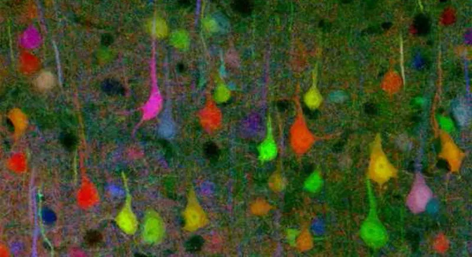
The human brain contains about 86 billion neurons and roughly 80% of these are found in a part of the brain called the cerebellum (Herculano-Houzel, 2009). Yet, case studies of individuals lacking a cerebellum indicate that for the most part, these individuals function relatively well, sometimes not even discovering their lack of a cerebellum until adulthood. There are other examples of functional and mostly ‘normal’ individuals missing large parts of their brains or even the connection fibers between the left and right sides of the brain (the corpus callosum). Although perhaps less than standard, the brains of these individuals can adapt and function despite a catastrophic loss of brain cells. Compensatory mechanisms often take over allowing other brain regions to perform tasks normally carried out by missing or damaged parts. This tells us something very important about the human brain. We may be tempted to compare it to a machine or a computer. However, our brains are almost nothing like the machines that we know and have created. Removing 80% of a car or a computer would hinder normal operation and make the machine unrecognizable.
The human brain, which is part of our nervous system, is astonishing and mysterious. Our quest to understand it has been an ongoing human endeavor for centuries. Despite tremendous progress, we are just scratching the surface in fully understanding this complex system. We have acquired basic knowledge of how some nervous system functions map onto specific locations/regions of the brain, but much remains to be learned. While there is good evidence of a strong association of brain function to brain structure, it is also clear from the examples above that for the most part our brains do not fit into a one-to-one ratio of region to function. Complex tasks such as learning, memory, reasoning, fear, compassion, love and hate and everything that makes us human are carried out by multiple brain regions connected through intricate and complex networks. And most importantly, these complex networks in the human brain can reorganize to compensate when something goes wrong.
So, what exactly is a nervous system? It may be surprising to you, but this question still raises debates among neuroscientists and philosophers. The nervous system is in many ways an input-output device that processes and responds to internal and external information. Yet, it is so much more. It can anticipate, fine-tune, process and store information for days, weeks and lifetimes. Some scientists have proposed that we possess an internal model of the world and our reality. Thus, information flowing in and out of our nervous systems works to constantly adjust this model. Dr. David Eagleman, a renowned neuroscientist states “The brain's internal model deduces information and makes assumptions, allowing guesswork to take the place of constant assessment” (Eagleman, 2015).
We organize the nervous system into a central and peripheral division. Together they work to receive/send, process, and interpret/modify information to ultimately regulate all that we do: how we move, how we feel, what we say and how we think. From breathing to walking, running to learning, and reasoning, we are entirely defined by our nervous systems.
This chapter will focus on the human nervous system and aims to give you the big picture, an overview of its structure and function. In subsequent chapters you will zoom in on details. We will start with the building blocks of the nervous system (its cellular composition) and then go on to the organization of the nervous system and its two main divisions, the central nervous system (CNS) and the peripheral nervous system (PNS). This chapter will lay the foundation for your journey through neuroscience, providing you with basic knowledge about anatomy and function. In later chapters, you will have the opportunity to delve into more detail.
References
Eagleman , D., Trackman, T., & Barden, G. (2015). The brain with Dr. David Eagleman. Blink Films https://films.com/id/115956/What_is_Reality_Part_1_The_Brain_with_David_Eagleman.htm
Herculano-Houzel, S. (2009). The human brain in numbers: a linearly scaled-up primate brain. Frontiers in Human Neuroscience,3, 31. https://doi.org/10.3389/neuro.09.031.2009
Thomson, H. (2014, September 10). Woman of 24 found to have no cerebellum in her brain. New Scientist. https://www.newscientist.com/article/mg22329861-900-woman-of-24-found-to-have-no-cerebellum-in-her-brain/
1.1Building a Nervous System
By the end of this section, you should be able to
- Describe the similarities and differences between neurons, glia, and all eukaryotic cells.
- Name and describe the functional specializations of a neuron.
- Describe the different types of glia and their function.
Across the animal kingdom, nervous systems are constructed using the same basic cell types: neurons and in most cases glia. Although neurons and glia come in different shapes and sizes, they share the fundamental features of all eukaryotic cells. In this section, we will explore how nervous system cells are both similar and different from other cells.
Brain cells are eukaryotic cells
The first cell is thought to have arisen on earth at least 3.8 billion years ago. Today we classify cellular life into three domains: Bacteria, Archaea and Eukarya. All cells on this planet contain a barrier to the outside world called a cell membrane and genetic material (DNA). However, unlike prokaryotic cells, which are members of the Bacteria and Archaea domains, eukaryotic cells belong to the Eukarya domain which has as its major cellular feature membrane-bound organelles. Membrane-bound organelles allow for functional compartmentalization and specialization. DNA is segregated in the nucleus where it is copied (via a process called replication) and/or converted into mRNA (messenger RNA). Once converted (transcribed) into mRNA, this material exits the nucleus. It is outside of the nucleus that the translation of mRNA to protein occurs in eukaryotic cells The Central Dogma.
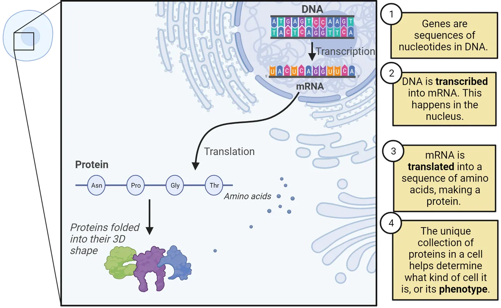
Brain cells, neurons and glia, also adhere to the characteristics specified above and are fundamentally just eukaryotic cells. However, neurons have additional features that make them uniquely specialized for communication, a feature which defines nervous systems. Before we get into the specifics of neurons and glia, let us establish a few fundamentals of eukaryotic cells.
Introduction to the central dogma: cell identity is determined by gene expression
The human body is thought to consist of trillions of cells. Because a single fertilized egg gives rise to all the cells in the adult body, every cell within an organism contains basically the same unique DNA genome. Yet, the human body is not made of identical cells. Depending on the organ system, cells differ in their shape, size, function, and modes of interaction. What makes a heart or liver cell different from a brain cell is not the DNA contained in its nucleus, which is identical in both. Rather, the difference is due to the selective process of transcription of DNA into RNA. Which parts of the DNA are read, and by extension which parts of the DNA are excluded, is the first step in making proteins. The chosen regions of DNA are transcribed into mRNA and translated into specific proteins.
One way to envision the genome is as a comprehensive cookbook containing all the written instructions of life and found in every cell. However, only certain recipes (DNA parts called genes) are chosen to ultimately be cooked (made into proteins) in different kitchens (different cells). Cell identity therefore arises from cell-specific gene choices. This is called gene regulation and is controlled by both intrinsic (within cells) and extrinsic factors (the environment that the cell matures in). For example, a neuron may require a specific channel protein that allows electrical communication while a pancreatic cell requires the expression of an insulin gene to regulate glucose levels in our body. Furthermore, different types of neurons found in different brain regions require different proteins to produce unique chemical messages known as neurotransmitters (e.g. dopamine versus acetylcholine). Proteins do all the work in our cells. This information flow of DNA to RNA to protein is called the central dogma. The central dogma is universal and is a feature of all living cells on our planet: DNA is transcribed into RNA which can be translated into proteins. The process of translation is facilitated by ribosomes which are large macromolecular complexes found floating inside cells or attached to organelles like the endoplasmic reticulum (see below).
Organelles: carry out functions of cells
Brain cells, like all eukaryotic cells contain a complement of organelles necessary for the proper cell function. This includes a nucleus (houses the DNA), endoplasmic reticulum, Golgi apparatus, lysosomes, mitochondria (singular is mitochondrion) and a few others (Typical eukaryotic cell). Cells store genetic material in their nucleus, transport materials across the cell membrane and within the cell, produce energy in the form of ATP, breakdown and build macromolecules, and communicate and interact with other cells. Organelles serve in these multiple functional roles. Of notable importance are the mitochondria, which facilitate most of the processes of cellular respiration that produce ATP. While the human brain only takes up about 2% of body mass, it uses about ~25% of daily energy production. Neurons can have up to 2 million mitochondria each and thus have the capability to produce a large amount of ATP. This high ATP demand is needed for the basic function of neurons and the communication between neurons (see Introduction).
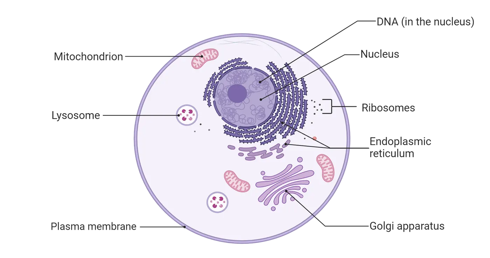
Neurons
The human brain is made up of ~86 billion neurons. Neurons are highly specialized for communication that occurs via electrical and chemical signals. With some exceptions, neurons have special structural features that branch from the cell body (soma), called axons and dendrites (Basic neuronal structure). Functionally, neurons receive and integrate signals, and send information in both electrical and chemical forms. Neurons communicate with their partners at regions called synapses.
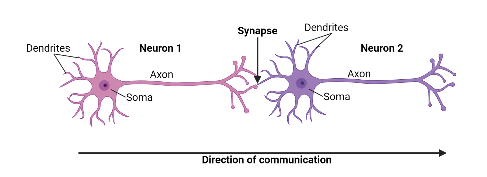
Neurons come in many shapes and sizes. When asked to describe a neuron, most students would draw a multipolar neuron containing one axon and several dendrites branching from the cell body (for example a motor neuron). This is the classic depiction found in the popular press and many biology texts. However, the nervous system contains other neuronal varieties, including bipolar neurons (two processes jetting off from the cell body; one dendrite and one axon; olfactory (smell) neuron being an example) and unipolar neurons (a single process from the cell body; dendrite and axon are continuous; often used for sending sensory information) (Neuron heterogeneity). Neuronal shape and structure can inform function. For example, bipolar neurons are uniquely suited for providing a pathway between input and outputs in the visual system.
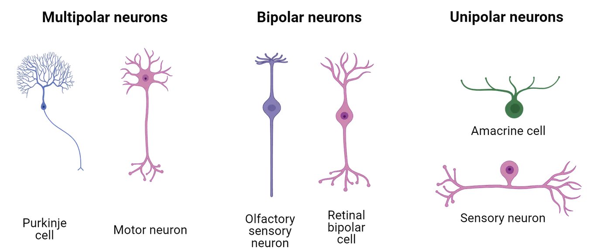
Neuroscientists have used many lenses for classifying neurons, grouping them by size, shape, or the connections they make (e.g. whether those connections have predominantly inhibitory or excitatory effects). For example, afferent neurons (e.g., sensory neurons) carry messages towards the central nervous system (CNS). Efferent neurons (e.g., motor neurons) carry messages away from the CNS. Interneurons allow communication within the nervous system and are located between sensory and motor neurons. Classification of neurons remains difficult, though, in part because they are so dynamic. Huge efforts are underway to catalog all the different types of neurons in the brain
Whatever their morphology or function, neurons have all the typical eukaryotic organelles, all of which are found in the cell body, called the soma (Parts of a neuron). Below, we will discuss in more detail the unique cellular features of neurons, using a common multipolar neuron depiction to help visualize them.
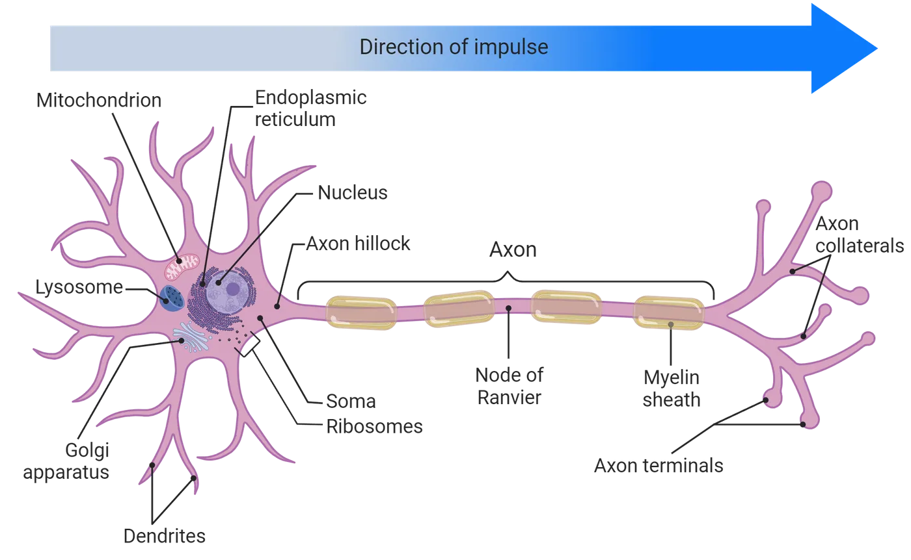
Dendrites
Dendrites are branches/processes that extend from the cell bodies (or soma) of most neurons. The word dendrite comes from Greek and means tree. We often talk about neurons having tree-like branching, arborization (also a tree analogy). Functionally, dendrites are specialized for receiving information at a synapse and transferring that information toward the cell body. Dendritic branching can be extensive or can be more minimal depending on the type of neuron. In some animal nervous systems, dendrites are studded with bumps called dendritic spines, which provide specialized compartmentalization for synapses and, among other functions, seem to be important in learning and memory (Dendritic spines).
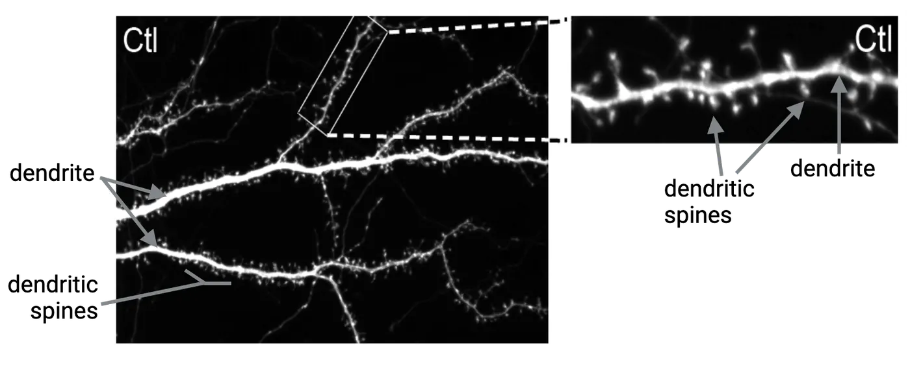
Axons
A neuron can have thousands of dendrites, but only one axon. An axon is a branch that like dendrites, emerges from the soma or cell body of the neuron. At the point of connection with the soma, the axon region is called the axon hillock (Parts of a neuron). Functionally, axons are specialized for sending information. Some cells, such as those in the retina, lack axons or have axons that are very hard to identify. An axon emerging from the soma can branch out at its terminal end to communicate with multiple cell partners. These branches are called axon collaterals and at the ends of these collaterals are axon terminals. Axons can vary in length depending on their location. For example, axons extending from the spinal cord to your toes are very long in comparison to axons found within the brain. Axons can be surrounded by a fatty substance called myelin, which helps insulate axons and allows more efficient/faster sending of signals over long distances in the body. Multiple sclerosis (MS) is an autoimmune disease where an individual’s immune system attacks myelin, causing neuronal communication slow-down and disruption. This leads to severe motor problems in the affected individual.
Not all axons in our nervous system are myelinated, especially those that travel shorter distances. Interestingly, there are many types of animals including some vertebrates that do not have myelin at all. Other biological adaptations, such as larger diameters of axons, are used in these cases to create efficient communication.
The Synapse
The synapse is the place where one neuron communicates with its partner. Neurons do not touch other neurons/cells directly, but rather interact via the space between them called a synaptic cleft. Neurons can form synapses not only with neurons, but also glands (neuroglandular junctions) and muscles (neuromuscular junctions). (Types of synapses).
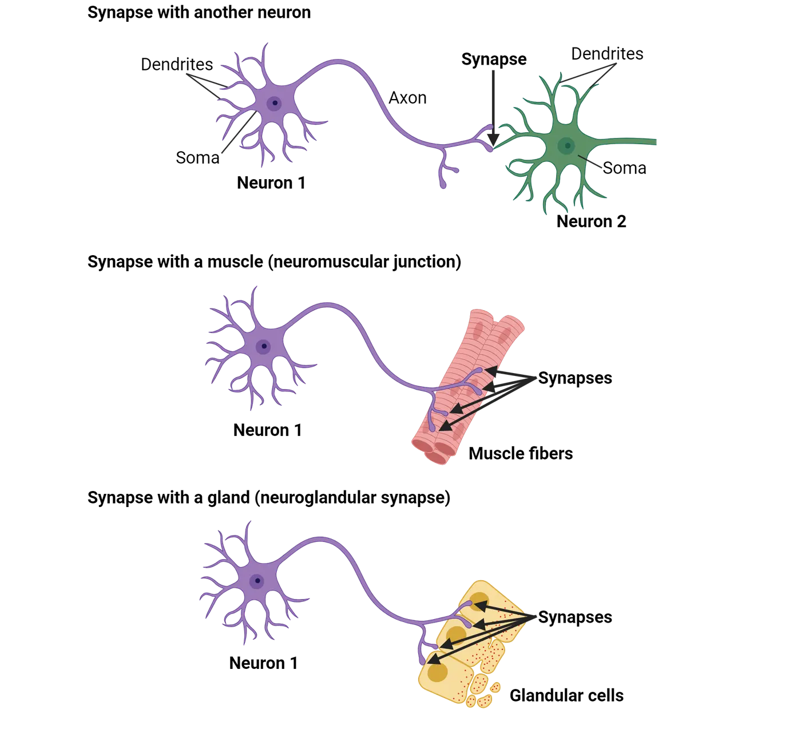
In the case of neuronal synapses, axons can synapse with dendrites (axo-dendritic) (Types of synapses), with other axons (axo-axonic) or with the soma (axo-somatic). The number of synapses that one neuron can participate in varies from tens to thousands. In chemical synapses, the presynaptic side of the synapse sends chemical signals (neurotransmitters) from one neuron to the postsynaptic side (membrane of the receiving cell). Most synapses are chemical synapses, but another type of synapse exists: the electrical synapse. It allows communication via channel proteins that physically connect adjacent cells and no neurotransmitter is utilized (see Introduction).
Glia
The name glia comes from the Greek word for ‘nerve glue’. Historically, these cells were first identified as connective cells that “glued” neurons together. However, over many years of research, glia have emerged as key players of the nervous system with a variety of sophisticated functions and not just nerve glue. Glia are non-neuronal cells in the nervous system that make up ~30-60% of the total brain mass. They are found in both the central and peripheral nervous systems. In many parts of the nervous system, they outnumber neurons. Glia are not thought to generate electrical signals, but function to support neuronal signaling (regulate the spread of signals in the brain). They can function to guide developing neurons to their proper destination. They can provide nutrients and other chemicals to the neurons that they surround. There is a rich and evolving literature around the interesting roles that glia play in the nervous system, but we will limit ourselves to a general overview. Below we will discuss the major types of glia: astrocytes, microglia, oligodendrocytes, and Schwann cells (Types of glia and example functions).
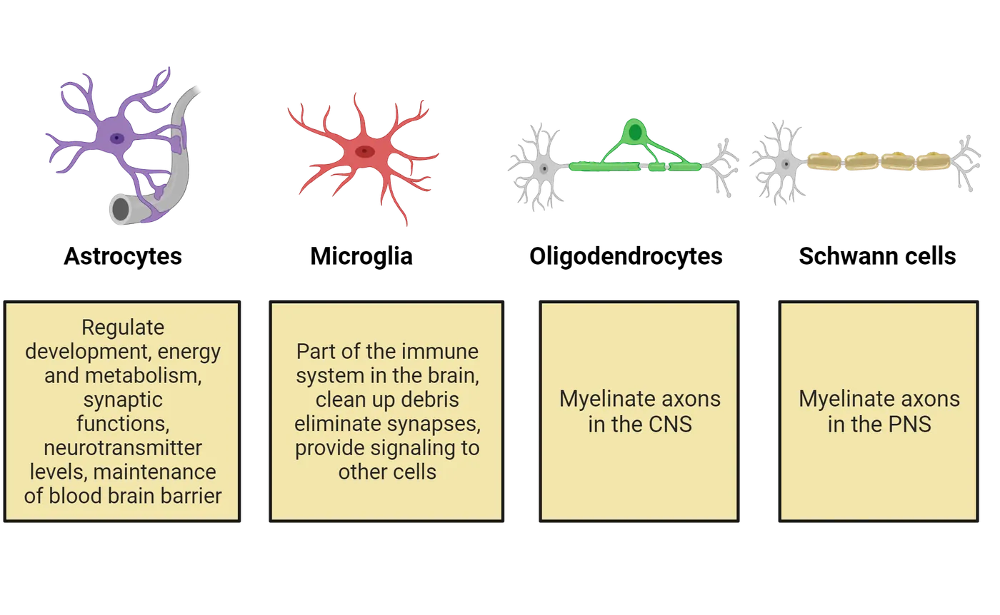
Astrocytes
Astrocytes have a characteristic star shape and represent the most abundant fraction of glial cell type in the adult human brain. Astrocytes have many functions, such as the maintenance of the blood-brain barrier. The blood-brain barrier (BBB) is a structure that filters chemicals and pathogens entering the brain. For example, the larger and less water soluble a molecule is, the less likely it is to cross this barrier (Astrocytic functions). In addition, these glial cells provide neurons with metabolic and structural support and help modulate neuronal function in some cases. One very important role for astrocytes involves recycling neurotransmitters by reuptake back into neurons (Astrocytic functions). Dysfunction of astrocytes has been associated with pathological conditions including epilepsy, brain tumors and neurodegenerative diseases like Alzheimer’s disease.
![2 part diagram. Part 1: Diagram of an astrocyte wrapping around a synapse to isolate the synapse and regulate neurotransmitter levels. Part 2: Diagram of an astrocyte wrapping around a blood vessel. The contact point between astrocyte and blood vessel is labeled “end-feet.” A zoom-in of the end-feet shows endothelial cell tight junctions and astrocyte processes between those cells/junctions and the brain. Large, charged or lipid insoluble molecules are shown being kept out of the brain while small, uncharged and lipid soluble molecules are more likely to cross the blood-brain barrier.](../assets/textbook/img/Image-1.40_Astrocytic-barrier-functions.webp)
Microglia
Microglia serve an immunological role in the nervous system and act like phagocytic cells. Phagocytes are cells that ingest foreign particles like bacteria, for example (see Introduction). Microglia are named for being very small. They destroy invaders that get through the blood-brain barrier and then clear out damaged neurons and unused synapses and thus play an important role in synaptic pruning and elimination of extra synapses during brain development. Improper synaptic pruning may be involved in neuropsychiatric disorders such as autism and schizophrenia.
Oligodendrocytes
Myelin is the insulating axon wrapping made up of lipid and protein, and oligodendrocytes are the myelinating cells of the central nervous system. Each oligodendrocyte provides myelin for several neurons. The axon of one neuron can be myelinated by multiple oligodendrocytes. As you will see in later chapters, myelin wrapped around axons is necessary for rapid communication in the nervous system (see Introduction).
Schwann Cells
Schwann cells are the main glial cells of the peripheral nervous system and serve similar functions to oligodendrocytes. Unlike oligodendrocytes, one Schwann cell provides myelin for the axon of a single neuron (see Types of glia and example functions).
History of Neuroscience: Visualizing Brain Cells: from Cajal to Brainbow
Throughout this section, we have discussed the cellular components of the nervous system and the unique specializations that allow neurons to communicate with each other. In the late 1880s, a debate brewed in the field of neuroscience. Without sophisticated tools and relying on simply observing the human brain, it was almost impossible to ascertain its components. Camillo Golgi, a prominent scientist of his time and the inventor of the Golgi stain (see below), championed a brain model where the building material of the brain was a single, dense, intricate, and continuous network akin to a material like gauze. This was called the reticular theory. On the other side of the debate was another Spanish scientist, Ramon y Cajal. Based on his findings, Cajal championed the Neuron Doctrine—the idea that the brain was composed of individual, unconnected cells. Ultimately, Cajal’s theory proved to be correct. Our ability to visualize the brain has advanced and deepened our understanding of Neuroscience. Beginning with the Golgi stain, this section will outline some common approaches to visualizing brain cells (Examples of neuronal stains).
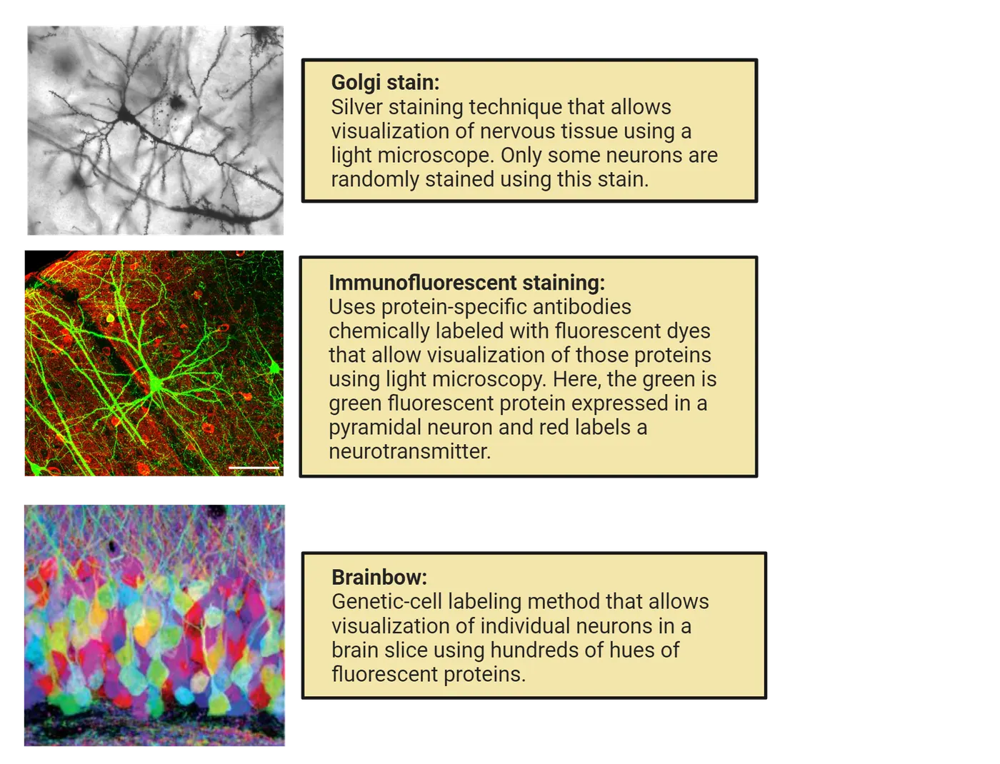
Chemical Stains: Focus on the Golgi Stain
The driver of scientific progress is often fueled by technical discoveries (a new instrument, a new technique) that allow scientists to visualize, analyze or probe. The Golgi stain (silver nitrate) was first discovered by Camillo Golgi as a way to visualize neurons in postmortem tissue. Its improvement and application to brain tissue by Ramon y Cajal in the late 1880s opened the door to our ability to see brain cells as individual entities for the first time. A unique feature of this technique is that, if applied to a forest of neurons, only a few random cells will become stained and stand out when visualized under a microscope. The reason for this selectivity is still unknown to this day. The neurons that do get stained become visible in a very complete way, allowing visualization of cell bodies/soma, dendrites, and axons (Examples of neuronal stains).
Cajal’s work revolutionized the field of neuroscience. For the first time, it was clear that neurons were separated from other individual cells and that they were morphologically distinct in different brain regions. He used Golgi’s own methods to refute Golgi’s belief that brain cells were a continuous cellular web. Through his careful work, Cajal gained many additional insights, including the fact that neurons were polarized (receiving information on their dendrites and cell bodies and sending information via axons). The Golgi stain continues to be a valuable tool for modern day neuroscientists. In addition to the Golgi stain, we have a number of chemical stains that can be used to visualize neural tissue, including but not limited to Nissl and H&E (Hematoxylin and Eosin) staining for cell bodies and nuclei and Luxol fast blue for myelin.
Immunofluorescence
All the chemical stains mentioned above allow scientists to visualize parts of a neuron such as a nucleus, cell body or processes. However, as we learned in the first section of this chapter, the types of genes expressed within a cell dictate its function. If a scientist is interested in determining the distribution of a specific protein (like an enzyme that produces a certain type of neurotransmitter) or the presence of myelin proteins, a more specific method of visualization is necessary. Immunofluorescence is a technique that uses antibodies (designed against a specific protein of interest) equipped with fluorescent tags (which come in many different colors) to localize and visualize a protein of interest using a fluorescent microscope (Examples of neuronal stains) (see Methods: Immunohistochemistry). There are well established antibodies that can be used as neuronal cell markers that allow scientists to distinguish neurons from glia, visualize synaptic connections, measure protein expression levels in different neurons, etc. We have the technology to generate antibodies to almost any protein that we are interested in studying, giving scientists a large toolkit to answer basic questions in neuroscience.
GFP Labeling/Brainbow
Following its discovery in the 1960s, green fluorescent protein (GFP) has been used to label cells, organelles and specific proteins. Because we know the exact DNA sequence that codes for the green fluorescent protein and because all living cells on this planet use the same genetic code (see central dogma above), we can insert the GFP DNA directly or attach it to any sequence that we may want to express in a cell. Once that DNA is taken up and expressed, the cell will glow green wherever the protein is found in the cell. The GFP DNA can be introduced into cells grown in culture or brain slices using specialized delivery tools like viruses. The GFP DNA can also be genetically engineered into gametes (reproductive cell of an animal or plant) prior to fertilization, which leads to GFP transgenic mice allowing visualization of specific regions in the brain throughout the lifetime of an animal. Beyond just green, genetic manipulations of the GFP DNA have been developed to introduce the genetic machinery to randomly mix colors (such as green, cyan and yellow fluorescent proteins) in individual neurons thereby creating a palette of different color combinations and shades, allowing visualization of whole neuronal circuits. This process produces a Brainbow, where each individual neuron stands out due to a different shade of color (Examples of neuronal stains).
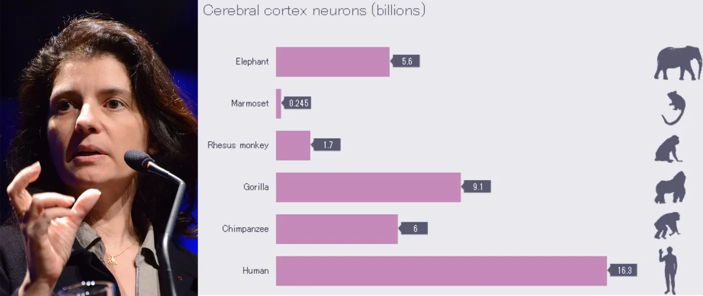
Summary
The basic cellular building blocks of the nervous system are neurons and glia. While sharing all features of eukaryotic cells, including membrane bound organelles and the central dogma, neurons and glia differ in some important ways that allow them to serve the functions of the nervous system. Neurons are specialized for communication via chemical and electrical signals with other cells. Glia serve in a number of support roles that are vital for neurons, including signaling. Our ability to visualize these cells and their architecture has revolutionized modern neuroscience.
Key terms
neuron, glia, DNA, mRNA, nucleus, neurotransmitters, ribosomes, endoplasmic reticulum, Golgi apparatus, lysosome, mitochondria, soma, axon, dendrite, afferent, efferent, interneurons,dendritic spines, axon hillock, axon collaterals, axon terminals, synapse, synaptic cleft, neuroglandular junction, neuromuscular junction, astrocytes, microglia, phagocytes, oligodendrocytes, Schwann cell, myelin, immunofluorescence, Golgi stain, GFPReferences
Blackburn, D., Sargsyan, S., Monk, P.N., & Shaw, P.J. (2009). Astrocyte function and role in motor neuron disease: A future therapeutic target? Glia, 57(12), 1251–1264. https://doi.org/10.1002/glia.20848
Delgado-García, J.M. (2015). Cajal and the conceptual weakness of neural sciences. Frontiers in Neuroanatomy, 9, 128. https://doi.org/10.3389/fnana.2015.00128
Dossi, E., Vasile, F., & Rouach, N. (2018). Human astrocytes in the diseased brain. Brain Research Bulletin, 136, 139–156. https://doi.org/10.1016/j.brainresbull.2017.02.001
Drachman, D.A. (2005). Do we have brain to spare? Neurology, 64(12), 2004–2005. https://doi.org/10.1212/01.WNL.0000166914.38327.BB
Herculano-Houzel, S. (2009). The human brain in numbers: A linearly scaled-up primate brain. Frontiers in Human Neuroscience, 3, 31. https://doi.org/10.3389/neuro.09.031.2009
Herculano-Houzel, S. (2012). The remarkable, yet not extraordinary, human brain as a scaled-up primate brain and its associated cost. Proceedings of the National Academy of Sciences - PNAS, 109(Supplement 1), 10661–10668. https://doi.org/10.1073/pnas.1201895109
Herculano-Houzel, S. (2021, November 24). Neuroscience explains exactly why we should be grateful for…our brains. Fast Company. https://www.fastcompany.com/90698752/neuroscience-explains-exactly-why-we-should-be-grateful-for-our-brains.
Jäkel, S., & Dimou, L. (2017). Glial cells and their function in the adult brain: A journey through the history of Their Ablation. Frontiers in Cellular neuroscience, 11, 24. https://doi.org/10.3389/fncel.2017.00024
Kann, O., & Kovács, R. (2007). Mitochondria and neuronal activity. American Journal of Physiology: Cell Physiology, 292(2), C641–C657. https://doi.org/10.1152/ajpcell.00222.2006
Kettenmann, H., & Ransom, B.R. (2013). Neuroglia (3rd ed.). Oxford University Press.
Kwon, D. (2021, June 18). Could mitochondria be the key to a healthy brain? Scientific American. https://www.scientificamerican.com/article/could-mitochondria-be-the-key-to-a-healthy-brain/.
Siegel, J. (2023, December 13). Scientists unveil first complete cellular map of adult mouse brain. Allen Institute. https://alleninstitute.org/news/scientists-unveil-first-complete-cellular-map-of-adult-mouse-brain/
Vanderbilt University Research News. (2017, November 29). Sorry, Grumpy Cat—Study finds dogs are brainier than cats. https://news.vanderbilt.edu/2017/11/29/grumpy-cat-study-dogs/
Practice The multiple-choice and fill-in-the-blank questions for this section are interactive and live on OpenStax, so they are not carried here: open the book on openstax.org.
1.2Organization of the Nervous System
By the end of this section, you should be able to
- Compare the general designs of animal nervous systems.
- Describe the divisions of the human nervous system and its basic anatomical organization.
- Describe the basic organization of a simple neural circuit.
The ways in which nervous systems across the animal kingdom are organized are both different and extremely similar. The section below will highlight some of the differences between vertebrates and invertebrates, and then shift to a more detailed discussion of vertebrate organization. All vertebrate (mammals, birds, reptiles, amphibians and fish) brains have the same basic number of brain divisions. This section will focus on understanding this basic organizational theme, with a focus on the human nervous system.
Neuroscience across species: neural nets, ganglia and centralized brains
All multicellular organisms with the exception of sponges have neurons and nervous systems, albeit varying in structure and complexity. Large differences are observed between animals with or without a backbone (vertebrates vs. invertebrates). Two general principles in nervous system organization across the animal kingdom include: neural nets and ganglia (Diversity of the nervous system organization).
![Three illustrations. 1) The nerve net of a hydra, which resembles a fish net surrounding the body. The hydra is plant like, with a trunk and tentacle like extensions at the top of the trunk. 2) The nervous system of a planarian, or flatworm. The flatworm has centralized ganglia, or brains, around each eye in the anterior end, and two nerve cords that run along the sides of the body. Transverse nerves connect the nerve cords together. 3) The nervous system of a human, which consists of a central nervous system composed of the brain and spinal cord, and a peripheral nervous system composed of the nerves running into the rest of the body.](../assets/textbook/img/Image-1.26_Diversity-of-the-nervous-system.webp)
Cnidaria (includes hydra, corals, jellyfish, and anemones) have neural nets. These are the simplest—and, considered evolutionarily, the oldest—form of nervous system organization. We can describe them as mesh-like systems of separate, yet interconnected neurons (not clustered into nerves or centralized). Nerve nets can be diffuse or can be connected to each other via long nerve cords, as in the case of flatworms. Nerves are defined as bundles of fibers (axons) that transmit information.
Nerve cords can be arranged in a ladder-like conformation and connected to ganglia. Ganglia are structures that contain collections of neuronal cell bodies and are found in animals more complex than Cnidaria, such as flatworms. Many invertebrates actually have more than one ganglia, each with specific functions, such as control of different muscles or, in the case of earthworms, different body segments. Often there is a cerebral ganglion which serves a more coordinative role. In contrast, vertebrates have a spinal cord encased in vertebral bones. The spinal cord runs along their back and most of the nervous system that is important for complex behavior is centralized and concentrated in a brain located in the head.
Animal symmetry
Humans and many other animals, including other vertebrates and some invertebrates, have bilateral body plans meaning that the left and right sides of the body are mirror images of each other. Other animals like jellyfish and sea stars are arranged centrally around a gastrointestinal core. This is called radial symmetry. While bilateral organisms often have one nerve cord and centralized ganglia or a brain that controls both sides of the body, radially symmetrical organisms lack a central brain and have radial nerves (sea star) or nerve nets (hydra) (Diversity of the nervous system organization and Bilateral vs radial symmetry).
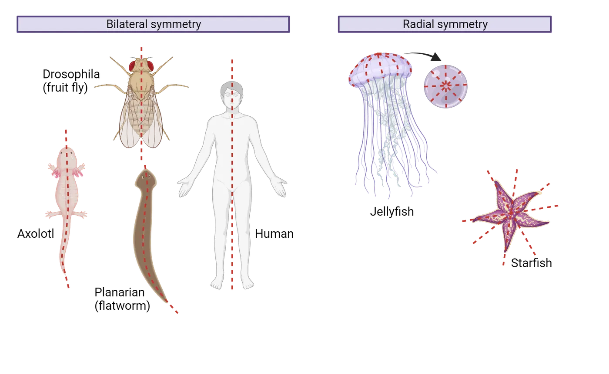
Centralization and cephalization
Nervous systems of animals with bilateral symmetry exhibit centralization and cephalization. Centralization refers to a nervous system organization where neurons are consolidated into specific areas of integration rather than just being randomly arranged throughout the body. Cephalization refers to the concentration of the nervous system at the anterior part of the body or the head. Flatworms, considered one of the simplest organisms with bilateral symmetry, exhibit both centralization and cephalization, having ganglia at the anterior end of their body (Diversity of the nervous system organization). All vertebrate nervous systems contain a central nervous system (CNS) (brain and spinal cord) and a peripheral nervous system (PNS) (peripheral motor and sensory nerves).
The basic organization and structure of the vertebrate nervous system
The human nervous system shares the same basic plan found in all vertebrates and we humans are not unique in our brain organization. The human brain is a vertebrate brain and basically a large primate brain. Our nervous system can be divided according to anatomical structures and/or functional regions. This section will introduce the CNS and PNS and highlight some important features of the two systems (Vertebrate nervous system organization).
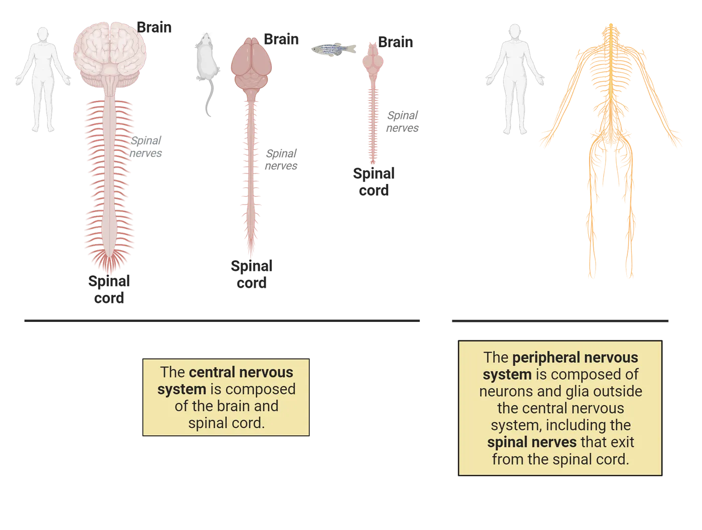
CNS and PNS
The human nervous system, like other vertebrate nervous systems, is organized into the central nervous system (CNS), which is composed of the brain and spinal cord, and peripheral nervous system (PNS), which includes all nerves and ganglia outside of the spinal cord and brain. Groups of neurons are segregated into nuclei in the CNS and ganglia in the PNS. Axon bundles are called nerves in the PNS and tracts in the CNS (Nervous system basics). Ascending tracts take information to the brain and descending tracts away from the brain. Vertebrate nervous systems are highly centralized with higher neural functions like memory, learning, perception and movement carried out within the brain. The spinal cord sends sensory information to the brain and conveys motor commands from the brain to the entire body. In addition, there are circuits found in the spinal cord that perform local processing and allow for simple behaviors such as reflexes to occur without the direct involvement of the brain. The spinal cord also contains central pattern generator circuitry that allows for rhythmic behavior such as walking (see Introduction). The PNS is responsible for carrying messages between the CNS and all body parts, including muscles, organs, and the body periphery in general. A more detailed discussion of the CNS and PNS can be found below.
![Three part diagram. 1) Diagram of a human brain and spinal cord, with cross sections shown with gray matter and white matter labeled. In the brain, gray matter is exterior and white matter is interior. In the spinal cord, this arrangement is switched. 2) Tracts and nerves: diagram showing directional arrows to represent ascending tracts or bundles of axons (into the brain) and descending tracts (away from the brain) in the CNS plus a diagram of human spinal nerves (which are bundles of axons). 3) Nuclei and ganglia: Diagram of sensory ganglia in the dorsal spinal nerve as a bulge in the nerves leaving a cross-section of spinal cord; this is an example of peripheral collection of cell bodies or ganglia. Diagram of human hypothalamus with many circles show to represent clusters of cell bodies known as nuclei in the CNS.](../assets/textbook/img/Image-1.11_Nervous-system-basics.webp)
Gray and white matter
The nervous system is made up of gray and white matter (Nervous system basics). This terminology refers to gross histological distinctions. Gray matter, named for its pinkish-gray color, has a high concentration of neuronal cell bodies, dendrites and axons that are not myelinated. White matter is composed of axon fibers covered in myelin, giving it its whitish color. Gray matter is found in the outermost layer of the brain and centrally within the spinal cord. White matter is in the deeper tissues of the brain and surrounds the gray matter in the spinal cord.
Meninges
The CNS is covered in bone. A skull encases the brain while the spinal cord is housed in a collection of 33 small bones called vertebrae. Between the bones and the nervous tissue of the CNS, there are layers of cushiony tissue called the meninges. The three layers of the meninges are dura mater, arachnoid mater and pia mater. The dura mater layer is found directly against the skull and vertebrae, and is the thickest layer of the three meninges (The meninges).
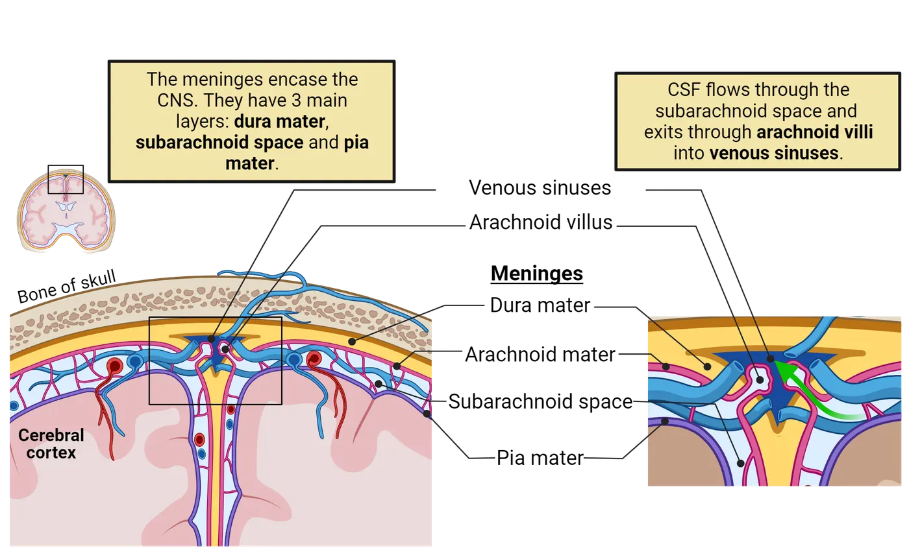
Ventricles
Ventricles are interconnected cavities or open spaces located in the brain and spinal cord that contain cerebrospinal fluid (CSF). They serve two main functions: 1) to cushion the brain and 2) to allow exchange of materials between the brain and blood vessels. CSF is produced by the choroid plexus, a tissue rich in blood vessels found in the lining of the ventricles. It is a clear liquid, essentially filtered blood. Spinal taps are medical procedures to remove a small amount of CSF to test for medical conditions or infections in the brain. The ventricular system is composed of 4 ventricles and an aqueduct (The cerebrospinal fluid (CSF)). Think of the ventricles as being similar to the great lakes: independent bodies of water but connected by rivers (aqueduct). The 2 large lateral ventricles in each cerebral hemisphere (left and right) connect to a third ventricle (in the diencephalon) which opens into the cerebral aqueduct (in the midbrain) and a fourth ventricle (in the hindbrain). The fourth ventricle extends to the central canal which is filled with CSF and runs across the spinal cord. CSF fills the ventricular system and circulates over the brain and spinal cord. It flows through the subarachnoid space and exits through the arachnoid villi into venous sinuses, a group of blood channels found throughout the brain. Eventually CSF is reabsorbed into the circulatory system. CSF is also found surrounding the brain below the arachnoid membrane called the subarachnoid space (The cerebrospinal fluid (CSF)).
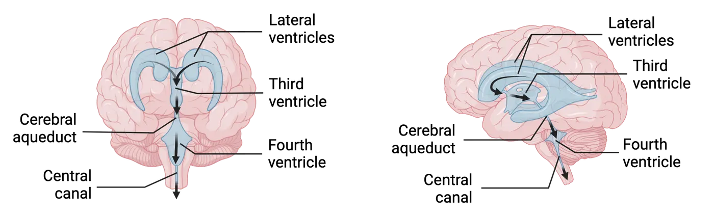
Vascular system of the brain
The human brain requires a disproportionate amount of energy in the form of ATP to function properly. ATP production requires oxygen, which is supplied by a constantly circulating blood supply. As a result, the brain has a complex system of blood vessels. Three main arteries (anterior, middle and posterior cerebral) are the main suppliers of blood to the cerebral hemispheres. The anterior and middle arteries arise from the carotid arteries on the left and right sides of the neck. The vertebral arteries run through the spinal column in the neck to provide blood to the brain and spinal cord, and give rise to the basilar artery. There are many vessels and capillaries that branch off from the main arteries delivering nutrients and removing waste (Brain vasculature). The endothelial cells that form the walls of brain capillaries are extremely well connected to each other and form the blood-brain barrier (BBB), which we discussed in the previous section. This serves as a layer of protection not found in other organs that prevents the flow of some substances like toxins or drugs and also protects against infections.
![Top show illustration of human head and torso with heart and major vessels heading towards brain. Vertebral arteries ascend into brain from the midline and join to form the basilar artery just beneath the brain while carotid arteries enter laterally. Cerebral arteries are shown branching from the center of the brain towards the sides. Bottom illustrations show lateral midline and surface views with major blood vessels labeled. Middle cerebral artery is only visible along the middle lateral surface of the brain. Carotid artery enters bottom of brain ventrally while basilar artery enters dorsally at midline. Posterior cerebral arteries spread from ventral midline of brain towards back of brain. Anterior cerebral artery spreads from ventral midline to front of brain.](../assets/textbook/img/Image-1.47_Brain-vasculature.webp)
Neural circuits
Neurons do not function independently. Rather, neurons are organized into simple or complex functional arrangements called neural circuits. A neural circuit represents a group of neurons connected by synapses that process specific types of information. Circuits range from very simple to exceptionally complex. One of the big challenges in modern neuroscience is to understand the complex ways in which circuits are built and function. Large scientific efforts are focusing on the enormous task of building detailed maps of brain circuitry. In this section, we will explore the basic building blocks and functionality of a simple circuit and introduce you to the research focused on more complex circuitry.
Basic building blocks of neural circuits
While neural circuits vary in function, anatomic arrangements and complexity, we can establish some basic principles. As introduced in Building a Nervous System, afferent (sensory) neurons carry information about the inside of the body and external environment to the brain or spinal cord while efferent (motor) neurons carry information from other neurons away from the brain/spinal cord or specific circuit. Interneurons serve as a bridge between other neurons and are found in the CNS. They are local circuit neurons that make intra-circuit connections and can act as regulators or adjustors to the circuit (Afferent, efferent and interneurons).
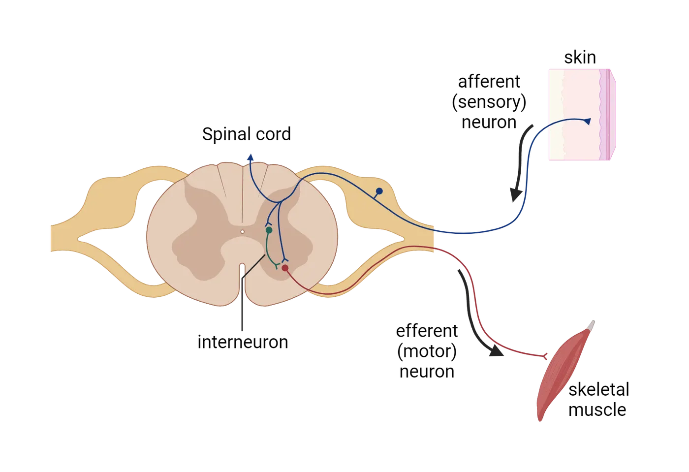
Simple human circuit example
A reflex arc is a simple neuronal circuit that controls a reflex beginning with a sensory neuron at a receptor (for example, pain receptors on a finger) and ending with a motor neuron at an effector (like a muscle). Reflex arcs are important for the generation of fast reactions to external stimuli such as accidentally placing your finger into an open flame or on a hot surface. Reflex actions are essential to the survival of organisms. To prevent bodily damage, a movement or response that is almost instantaneous and involuntary is required.
In a reflex arc, the sensory neurons do not pass information directly to the brain but rather information travels to the spinal cord, which, in turn, causes direct activation of spinal motor neurons. These neurons can then activate muscles that allow your hand to move away from the hot surface. Of course, information about such an event must eventually get to the brain to allow learning and future avoidance. Another example of a simple human circuit is the knee-jerk reflex (Simple circuit example), which allows for involuntary movement of the leg in response to a sharp tap to the tendon below the knee cap. The knee-jerk reflex is an example of a reflex pathway that is both excitatory and inhibitory (once the extensor muscle on the thigh contracts, the flexor muscle on the back of the thigh must relax). Stimulation of stretch receptors via the tap leads to afferent sensory neuron(s) activation, which in turn synapses either onto interneurons or directly onto efferent motor neurons that cause contraction of the extensor muscles. The interneuron serves to inhibit the motor neurons that connect to flexor muscles which keeps the flexor muscle relaxed. This combined action leads to leg extension (Simple circuit example). This reflex prevents knee collapse in the event of a sudden leg bend.
![Diagram of a cross-section of spinal cord with input/output connected to a cartoon of a person sitting in a chair with feet on the floor. Incoming, sensory (afferent) neuron is shown with input terminal in the person’s quadricep, cell body in dorsal root ganglia and axon terminals synapsing on an efferent motor neuron in the ventral gray matter of the cord that sends an axon out to a skeletal muscle in the quadriceps. The knee-jerk reflex described in the main text is implied by a hammer on the patella and outline of a leg swinging out.](../assets/textbook/img/Image-1.31_Simple-circuit-example.webp)
Mapping complex brain circuits
A major goal in neuroscience is the mapping of complex neural circuits in the human brain. Because the human brain is exceptionally complex with its 86 billion neurons, each communicating with hundreds or even thousands of other neurons, this is an extremely difficult endeavor. Scientists hope to one day complete the task of mapping the human brain connectome (a comprehensive map of neuronal connections in the brain akin to a wiring diagram). In the meantime, neuroscientists have been using simple animals like worms and flies to develop wiring maps that can provide clues to how brains work in general. Presently, two comprehensive wiring diagrams have been published: the roundworm (C. elegans) nervous system which has a very small number of neurons (302 neurons and 7000 connections) and most recently the entire brain of a fruit fly larva (D. melanogaster), made up of 3016 neurons and 548,000 connections.
There are several large, international, ongoing human mapping projects. These include the Human Connectome Project started in 2009 whose aim was to build a healthy human brain connectome and develop connectomes related to human disease. Building onto the Human Connectome Project, the BRAIN Initiative was started in 2013 with the aim of producing a dynamic picture of the brain which would map individual brain cells and the circuits that they take part in both time and space. The goal with such large projects and initiatives is to provide a deeper understanding of brain function and as a result develop new treatments for brain disorders. In 2021, the BRAIN initiative unveiled a detailed atlas of a small brain region, the mammalian primary motor cortex, derived from studies in mice, monkeys and humans.
Summary
Nervous systems vary across the animal kingdom in design and complexity. From neural nets to ganglia to centralized brains, there is a great deal of diversity. At the same time, due to evolution, all nervous systems share fundamental similarities. The human nervous system is a typical vertebrate system divided into a peripheral and central nervous system. Both are composed of white (myelinated axons) and gray matter (neuron cell bodies, dendrites and unmyelinated axons). Neurons do not operate in isolation but rather interact with each other in neural circuits that can vary in complexity. Neuroscientists have been working to understand the neural circuitry found in nervous systems by developing wiring maps or connectomes. There are several large circuit mapping projects underway seeking to map the human brain.
Key terms
neural nets, ganglia, nerve cord, bilateral, radial symmetry, centralization, cephalization, central nervous system (CNS), peripheral nervous system (PNS), nerves, nuclei, tracts, gray matter, white matter, meninges, dura mater, arachnoid, pia mater, cerebrospinal fluid, lateral ventricles, third and fourth ventricles, central canal, cerebral aqueduct, arachnoid villi, venous sinuses, anterior cerebral, middle, cerebral and posterior cerebral arteries, basilar artery, vertebral artery, blood-brain barrier, neural circuit, reflex arcReferences
Cook, S.J., Jarrell, T.A., Brittin, C.A., Wang, Y., Bloniarz, A.E., Yakovlev, M.A., Nguyen, K.C.Q., Tang, L.T.-H., Bayer, E.A., Duerr, J.S., Bülow, H.E., Hobert, O., Hall, D.H., & Emmons, S.W. (2019). Whole-animal connectomes of both Caenorhabditis elegans sexes. Nature, 571, 63–71. https://doi.org/10.1038/s41586-019-1352-7
Martinez, P., & Sprecher, S.G. (2020). Of circuits and brains: The origin and diversification of neural architectures. Frontiers in Ecology and Evolution, 8, 82. https://doi.org/10.3389/fevo.2020.00082
Moreno-Camacho, C.A., Montoya-Torres, J.R., Jaegler, A., & Gondran, N. (2019). Sustainability metrics for real case applications of the supply chain network design problem: A systematic literature review. Journal of Cleaner Production, 231, 600–618. https://doi.org/10.1016/j.jclepro.2019.05.278
Winding, M., Pedigo, B.D., Barnes, C.L., Patsolic, H.G., Park, Y., Kazimiers, T., Fushiki, A., Andrade, I.V., Khandelwal, A., Valdes-Aleman, J., Li, F., Randel, N., Barsotti, E., Correia, A., Fetter, R.D., Hartenstein, V., Priebe, C.E., Vogelstein, J.T., Cardona, A., & Zlatic, M. (2023). The connectome of an insect brain. Science, 379, eadd9330. https://doi.org/10.1126/science.add9330
NIH. (2021, October 6). NIH BRAIN Initiative Unveils Detailed Atlas of the Mammalian Primary Motor Cortex. National Institutes of Health (NIH). https://www.nih.gov/news-events/news-releases/nih-brain-initiative-unveils-detailed-atlas-mammalian-primary-motor-cortex.
Practice The multiple-choice and fill-in-the-blank questions for this section are interactive and live on OpenStax, so they are not carried here: open the book on openstax.org.
1.3The Central Nervous System: CNS
By the end of this section, you should be able to
- Correctly identify nervous system anatomical and directional orientation.
- Summarize the general steps and structures in the development of the human nervous system.
- Explain the basic organization of the spinal cord.
The central nervous system (CNS) is made up of the brain and spinal cord. Unlike the PNS, the CNS is encased in bone (skull and vertebral column). In addition to the brain and spinal cord, the retina (the neural tissue of the eye) is also considered to be an extension of the CNS. This section will introduce the CNS with a focus on development. You will find a detailed discussion of the brain including anatomy and function in its own section, The Brain: Structure and Function. This section will begin by introducing some basic terminology that will be useful to you throughout this text.
Anatomical orientation and planes of orientation
Specific terminology is applied to describing anatomical structures and orientation in the nervous system. Dorsal is an anatomical direction that refers to both the back of the spinal cord and to the top of the brain. The opposite of dorsal is ventral which means toward the bottom of the brain or the front of the spinal cord. Superior and inferior refer to above or below another structure. The bend in the human neuraxis causes a dissociation between the dorsal/ventral and superior/inferior directions. Anterior means toward the face and head, and posterior means toward the back or toward the feet. Rostral is toward the brain and or the top of the spinal cord while the opposite, caudal, is towards the back of the brain. Medial means toward the middle or center while lateral means left or right of another structure (toward the outside) (Anatomical orientation). Ipsilateral means the same side and contralateral means the opposite side. For example, the right motor cortex controls the left side of the body and the left motor cortex controls the right side of the body (contralateral).
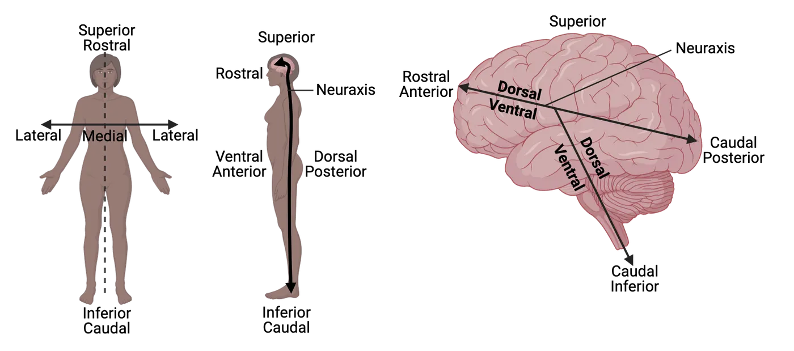
There are three planes for sectioning the brain for anatomical analysis: coronal sectioning (cutting the brain front to back); sagittal sectioning (cutting the brain left to right) and horizontal or axial sectioning (cutting the brain top to bottom) (Planes of orientation).
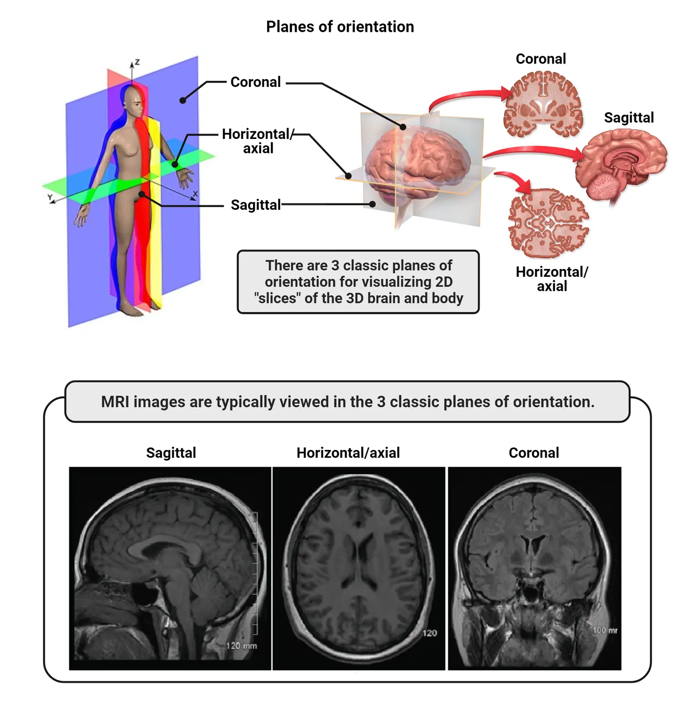
Developmental perspective: vertebrate nervous system development
Neurodevelopment is a complex and multi-step process that requires a tremendous amount of coordination. Turning on the right genes at the right time is crucial and any missed steps or abnormal development can have catastrophic consequences. The embryonic development of the vertebrate nervous system begins with the outer tissue of the embryo called the ectoderm. At about 3 weeks in development, the ectoderm begins to thicken and form a flat structure called the neural plate. During the 3rd and 4th week of development, the neural plate begins to invaginate into a groove that eventually closes to form a neural tube. In the initial stages of formation, the neural tube is made up of one layer of cells (epithelial), which serve as the progenitors (embryonic neural stem cells) of glia and neurons. The neural tube elongates to form the spinal cord while the anterior region enlarges and expands to form the brain. Three swellings or bulges eventually become apparent, which become the prosencephalon (forebrain), mesencephalon (midbrain) and rhombencephalon (hindbrain). As development progresses, the prosencephalon subdivides into the telencephalon and the diencephalon. The mesencephalon does not further subdivide. The rhombencephalon becomes the myelencephalon and the metencephalon. The spinal cord forms from the end of the neural tube next to the myelencephalon. By 11 weeks of deveopment, the shape of the human brain is similar to a brain at birth. In the sections that follow, we will discuss the adult structures that derive from the five embryonic regions above (Development of human nervous system). More details on development can be found later in this text (see Introduction).
![Diagram showing overview of neurodevelopmental steps from formation of neural plate through adult brain. The neural plate is diagrammed as midline tissue that starts flat then invaginates and closes to form the neural tube. Next, the neural tube is shown differentiating into forebrain, midbrain and hindbrain with those divisions further dividing into the 5 major divisions listed in the main text. A sagittal view of the neural tube at this phase shows it starting to curl over on the anterior end to form the brain. The 5 major divisions are shown preserved in the adult brain.](../assets/textbook/img/Image-1.28_Development-of-human-nervous-system.webp)
Telencephalon and diencephalon
The telencephalon becomes the cerebral hemispheres, which makes up the largest part of the brain (~85% of the total brain mass). The cerebral hemispheres include the cerebral cortex, the outermost layer of the cerebrum. The word cortex comes from Latin for ‘bark’ and represents an extremely thin layer that if flattened is the size of a regular pillowcase. Below the cortex are deeper, subcortical structures that include the hippocampus, amygdala, and basal ganglia. The lateral ventricles arise from the telencephalon. The posterior part of the forebrain is the diencephalon. This eventually becomes the thalamus, hypothalamus, and posterior pituitary gland. Additionally, the diencephalic cavity becomes the third ventricle (see Organization of the Nervous System for ventricles).
Mesencephalon, metencephalon and myelencephalon
The mesencephalon (midbrain) forms into the tectum and tegmentum. These eventually form the roof and floor of the cerebral aqueduct which arises from the mesencephalic cavity. Behind the mesencephalon are the hindbrain divisions: 1) metencephalon, which becomes the cerebellum and the pons, and 2) myelencephalon, which becomes the medulla. The mesencephalon and myelencephalon develop from the rhombencephalon whose cavity becomes the fourth ventricle (see Organization of the Nervous System).
Spinal cord
The spinal cord forms from the neural tube and retains this tube-like shape once fully developed. It extends from the medulla oblongata in the brainstem down the body as a solid structure that ends in the middle of the lower back and continues as a spray of fibers called cauda equina. The cauda equina is part of the PNS rather than the CNS and it sends and receives information to and from the pelvic organs and lower limbs.
The spinal cord is enclosed by three membrane layers (the meninges) and is encased in the vertebral column made up of bony vertebrae separated by intervertebral discs. Each of these vertebrae has an opening that allows 31 spinal nerves to pass on each side. The spinal cord is divided into 5 major regions: cervical, thoracic, lumbar, sacral and coccyx. Each spinal nerve is named based on which of the 4 major regions of the spinal cord it is connected to. The area of the skin innervated by the spinal nerve is the nerve’s dermatome. These are named according to the 5 major regions above (for example T1-T12 is thoracic) (Spinal nerve organization). The central canal (which is continuous with the 4th ventricle, see Organization of the Nervous System) runs through the spinal cord and is filled with cerebrospinal fluid. It provides cushioning and a transportation system to the spinal cord.
![Diagram of the central nervous system of a human, showing a brain with spinal cord descending from the back of the brain and spinal nerves exiting at each vertebra. Adjacent is a diagram of the human spinal cord with the cervical, thoracic, lumbar, sacral and coxyl sections of the cord color coded (from rostral to caudal). A human body is also shown with color coding on the body surface to indicate which spinal nerves connect to that portion of the body (i.e. the dermatomes). Dermatomes follow anatomical order with the more rostral sections of the spinal cord serving dermatomes more rostral on the body.](../assets/textbook/img/Image-1.13_Spinal-nerve-organization.webp)
Gray and white matter in the spinal cord
When looking at a cross section of the spinal cord, the center contains gray matter while the white matter is found towards the outside. The gray matter contains glia, interneurons, and motor neuron cell bodies, and it is butterfly-shaped. In keeping with this analogy, the wing areas are called horns. Dorsal and ventral horns are found on each side of the cord (Spinal cord organization).
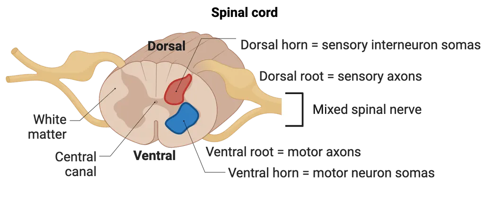
The white matter consists of myelinated nerve tracts (axons) that travel up and down the spinal cord (Sensory and motor tracts). Along the spinal cord, the 31 pairs of spinal nerves emerge at regular intervals laterally serving each side of the body (Spinal nerve organization). There are two distinct nerve bundles, roots that branch off. The dorsal roots contain sensory neurons that project from the body to the spinal cord whose cell bodies are organized in a ganglion called the dorsal root ganglion which is adjacent to the spinal cord. The ventral roots house motor neurons that leave the spinal cord and project to muscles (motor) (Spinal cord organization).
Ascending and descending pathways
Information that travels to the brain is divided along compartmentalized pathways via tracts. Ascending and descending tracts make up the white matter. Sensory information travels via ascending pathways from sensory receptors to processing centers in the brain. These sensory tracts carry specific information, for example pain and temperature or pressure and crude touch or fine touch, vibration, and proprioception. The sensory tracts are made of 1st, 2nd and 3rd order neurons connected to each other. The 1st order neurons receive the sensory information at the periphery. These pass information to the 2nd order neurons in the spinal cord. Eventually 3rd order neurons pick up information from the 2nd order neurons in the thalamus and carry it to the cortex (see The Brain: Structure and Function). Motor information moves via descending pathways that carry commands from specialized CNS centers to skeletal muscles. Upper motor neurons originate in the cerebral cortex and travel down to the spinal cord, while the lower motor neurons begin in the spinal cord and send information to the periphery. Motor tracts can be specialized in regulation of voluntary movement or balance and posture (Sensory and motor tracts).
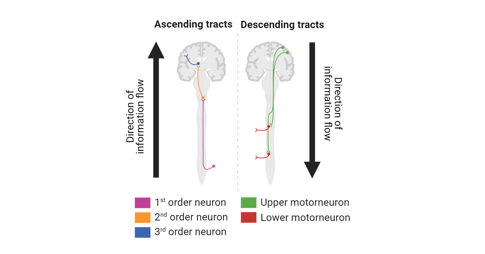
Summary
The CNS is composed of the brain and spinal cord and is responsible for receiving and processing information from the PNS and ultimately controlling the entire body. It develops from a section of the ectoderm called the neural plate which eventually becomes the neural tube and ultimately separates into different brain regions and the spinal cord. The spinal cord is divided into 5 anatomical regions and houses ascending and descending nerve tracts, horns and roots.
Key terms
retina, dorsal, ventral, superior, inferior, neuraxis, anterior, posterior, rostral, caudal, medial, ipsilateral, contralateral, coronal, saggital, horizontal, cerebral cortex, ectoderm, neural plate, neural tube, prosencephalon, mesencephalon, rhombencephalon, telencephalon, diencephalon, metencephalon, myelencephalon, cauda equina, dermatome, cervical, thoracic, lumbar, sacral, coccyx, dorsal horn, ventral horn, dorsal root, ventral root, ascending and descending tractsPractice The multiple-choice and fill-in-the-blank questions for this section are interactive and live on OpenStax, so they are not carried here: open the book on openstax.org.
1.4The Brain: Structure and Function
By the end of this section, you should be able to
- Connect the embryological divisions of the brain to their adult derivatives.
- Describe and explain the basic structure and function of the cerebrum, limbic system, basal ganglia, the diencephalon, brainstem and cerebellum.
As described earlier, during the development of the central nervous system at about 50 days post conception, 5 major embryonic divisions can be observed: the telencephalon and diencephalon (forebrain); mesencephalon (midbrain); metencephalon and myelencephalon (hindbrain). The section below will describe the adult brain in its general structure and function organized from the 5 embryonic origins (Overview of brain regions , also see Development of human nervous system).
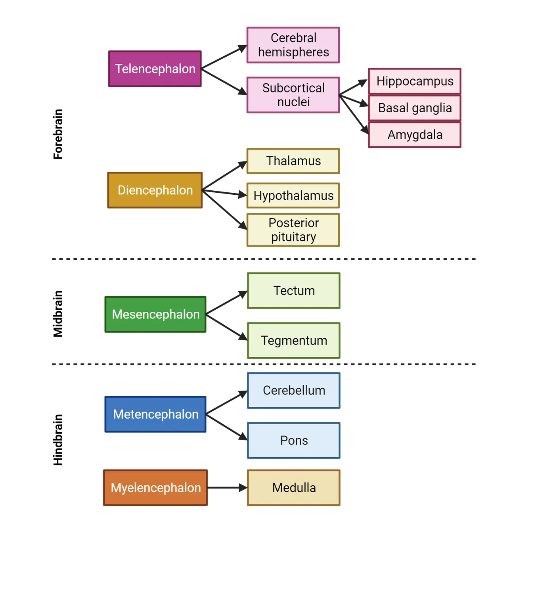
As you read through this section, you will encounter descriptions of specific brain regions being responsible for specific functions. For example, every student who has taken introductory psychology or biology may tell you that the amygdala is responsible for emotional memory and the cerebellum for movement coordination. Assigning behavior to specific structure(s) is only a small picture of how behavior emerges from neural function. We must be cautious about assuming that specific structures are responsible for certain functions only. The brain has great potential for flexibility and parts of the brain can switch functions. For example, individuals blinded early in life may exhibit enhancement of other senses like hearing and touch. In these individuals, the visual cortex, which is normally responsible for vision, switches function and now responds to touch. As you continue your studies in neuroscience, you will begin to understand more nuance and complexity in correlating brain structure and function. For now, this section will introduce some canonical and sweeping generalities about brain function.
Cerebrum and cerebral cortex
The telencephalon becomes the cerebrum, the largest part of the brain, divided into two halves, or hemispheres, and makes up about three fourths of the total brain volume (Development of human nervous system and Basic cortical features). In the human nervous system, the left hemisphere controls the right half of the body, and the right hemisphere controls the left side of the body. The right and left cerebral hemispheres are connected by a thick fiber bundle (collection of axons) called the corpus callosum. This allows information to pass from one side to the other side of the brain. The cerebrum includes the cerebral cortex and cerebral nuclei (clusters of neurons). In many animals, the cortex is smooth. However, in larger brains like ours, the cortex is wrinkled and thin (on average about 2.5 mm). It is folded, to create an increased surface area, thus maximizing the amount of cortex in the brain. This folding leads to the formation of ridges or bumps called gyri (gyrus is the singular) and grooves called sulci (singular is sulcus). The deeper grooves of the brain are called fissures (Basic cortical features). The two hemispheres are divided by the longitudinal fissure. The two lateral ventricles (see The Brain: Structure and Function) are located in the cerebrum.
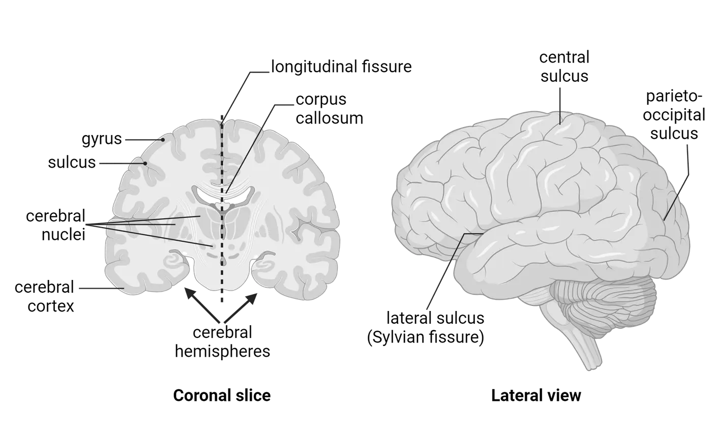
The cerebral cortex is packed with neurons, about 16 billion of the total 86 billion neurons in the human brain, and is composed mostly of gray matter. In humans, the cerebral cortex houses most higher brain functions and complex cognition. This includes reasoning, language, consciousness, perception, emotion, personality, decision-making, and memory. Neurons in the cortex are typically arranged in six layers. Each layer contains unique neuron types and architecture. The cortex is divided into specific functional areas: sensory, association and motor areas. The sensory areas receive sensory information from touch, sight, hearing, smell and taste. The association areas help integrate sensory information to give meaning to the incoming information. Finally, the motor areas initiate and regulate voluntary movement.
Lobes of the cerebral cortex
Different areas in the cerebral cortex are associated with specific functions. Each hemisphere’s cerebral cortex is divided into four lobes: frontal, temporal, parietal, and occipital (Lobes of the cortex). Each of these four lobes is involved in a number of functions. This section highlights the major functions but is not necessarily comprehensive.
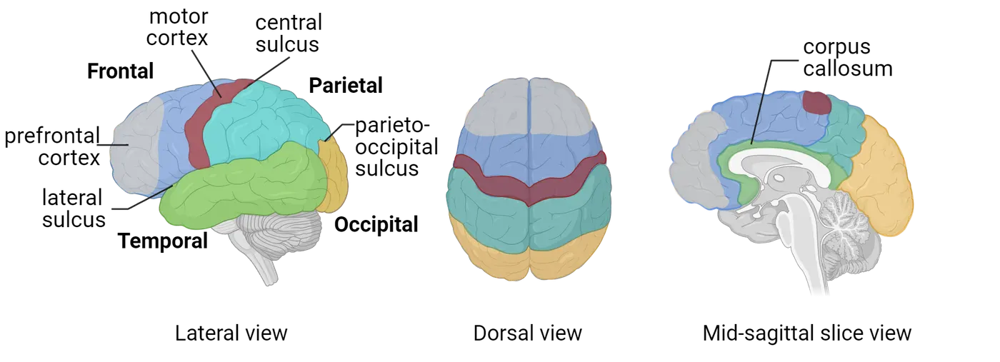
The largest of the four lobes is the frontal lobe. It also contains the olfactory bulb, which is key for our sense of smell. Towards the posterior end of the frontal lobe are the premotor and motor regions that help plan and carry out movement throughout the body. The primary motor cortex sends axons through the brain and into the spinal cord via a descending tract (corticospinal tract). Once these axons reach the brainstem (the stalk of the brain that joins with the spinal cord, see The Central Nervous System: CNS), they crossover so that movement on the left side of the body is controlled by the right side of the brain and vice versa. The prefrontal cortex of the frontal lobe is crucial for personality; higher level-cognition and decision making, problem solving, attention and also some memory functions.
The frontal and parietal lobes are separated by a central sulcus (Basic cortical features). The parietal lobe is important for somatic sensation integration. The somatosensory cortex, which is found in the anterior part of the parietal lobe, receives information about touch on all areas of our body. In addition, the parietal lobe has a role in our ability to know the location of our body is space, also known as proprioception.
The occipital lobe is located posterior and inferior to the parietal lobe and primarily functions in vision processing. It contains a primary visual cortex and other areas necessary for visual processing of color, movement and patterns.
The temporal lobe is the second largest in size following the frontal lobe. It is located underneath the frontal and parietal lobes and is key for language, memory, hearing and face perception. It is divided from the other lobes by a lateral sulcus called the Sylvian fissure (Basic cortical features).
Hemispheres
In addition to the cortex which covers the cerebral hemispheres, the inner core of the cerebral hemispheres is composed of white matter. The cerebral hemispheres are largely redundant in function with a few small exceptions. For example, in most humans the left hemisphere controls language and speech while the right interprets spatial, visual information and face recognition (see Introduction). The left and right hemispheres are divided by a deep longitudinal fissure and are connected by axonal tracts called cerebral commissures. Tracts that cross the midline of the brain are called commissures. As mentioned above, the largest of these is the corpus callosum, which connects the two hemispheres and allows information to be passed between sides (Lobes of the cortex). If the corpus callosum is damaged or purposely severed (rare approach to treat epilepsy), it leads to a condition called split-brain syndrome. This is characterized by neurological abnormalities related to communication between the two sides of the brain. For example, a split-brain patient may not be able to read a specific word when it is presented to the right hemisphere but can identify the drawing that goes with that word.
Limbic System and Basal Ganglia
Underneath the cerebral cortex are a group of specialized brain areas called subcortical structures or nuclei. Two major subcortical structure systems are the limbic system and the basal ganglia, which also derive from the telencephalon.
Limbic System
The limbic system is a collection of structures that border the brainstem and are located under the cerebral cortex (Limbic system). The word limbic is derived from the Latin “limbus,” which means border. The limbic system is an anatomical concept and continues to be somewhat controversial when it comes to brain anatomy. Interestingly, neuroscientists can’t fully agree on a set of criteria for regions that count as part of the limbic system. Not even anatomy is set in stone.
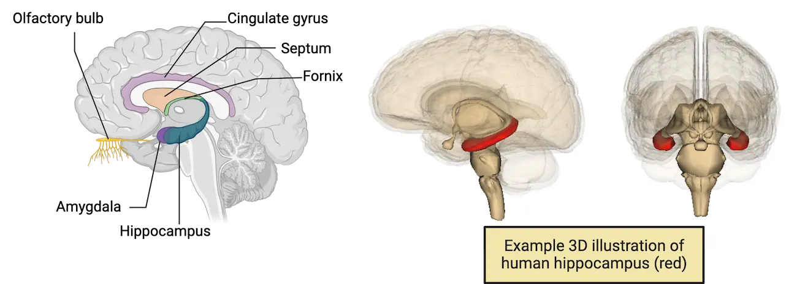
Traditionally, the limbic system is defined as a connected set of structures that is involved in emotion, aggression, appetites and sexual behavior. While still up for debate, it is generally agreed that the limbic system includes the hippocampus, amygdala, and the cingulate gyrus. The cingulate gyrus is part of the cortex and sits right above the corpus callosum and is very important for emotional and cognitive functions. The amygdala is especially important for fear emotions and fear memory. The hippocampus is associated with memory and specifically the ability to form long term memories. Additional regional structures of the limbic system may include the fornix (connects hippocampus to hypothalamus), septum (often linked to emotion) and olfactory bulb (important for our sense of smell).
Basal Ganglia
Basal ganglia (nuclei) are a group of structures that play an important role in controlled and coordinated movements (Basal ganglia). This includes initiating and facilitating movement while also inhibiting unwanted movement. In addition, some regions of the basal ganglia are also important in motivation, reward and addiction. The basal ganglia system can be subdivided into the caudate nucleus and putamen (collectively called the striatum), globus pallidus and subthalamic nucleus. The striatum receives commands from the cortex and passes them along to the other regions of the basal ganglia.
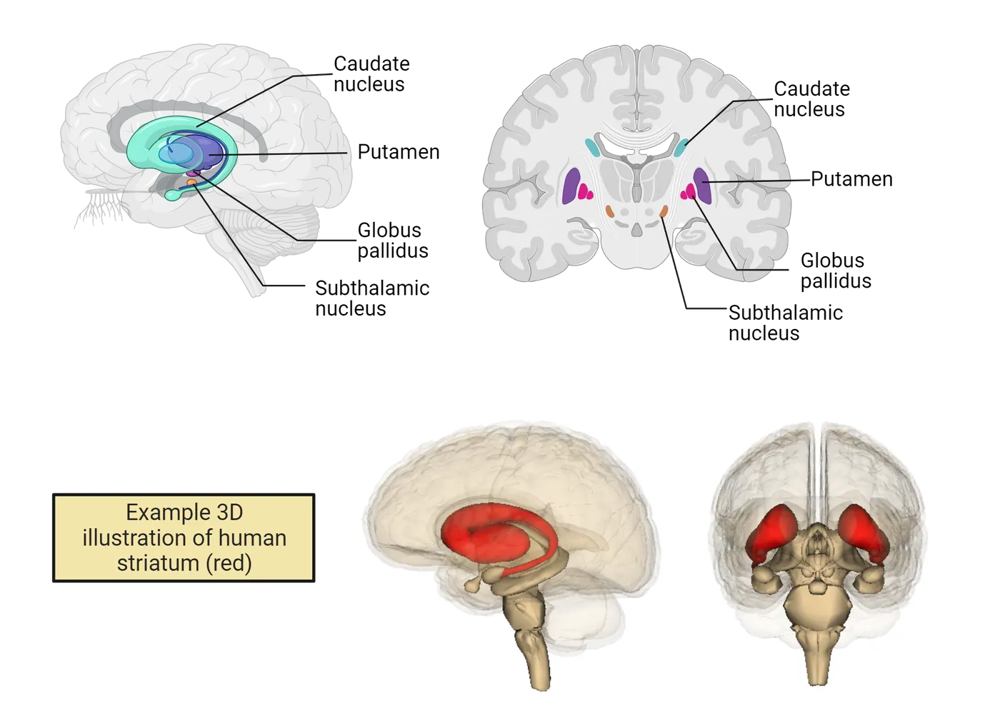
Eventually basal ganglia information goes to the thalamus which relays information back to the cortex. Damage to the basal ganglia causes movement dysfunctions and is associated with neurodegenerative diseases like Parkinson’s and Huntington’s diseases.
Diencephalon
The diencephalon is made up of the thalamus and hypothalamus, located inferior to the cerebrum and next to the third ventricle. The thalamus provides a relay station for sensory information coming in from the spinal cord and PNS, heading to the cortex. The hypothalamus is important for homeostasis control of basic functions (Diencephalon).
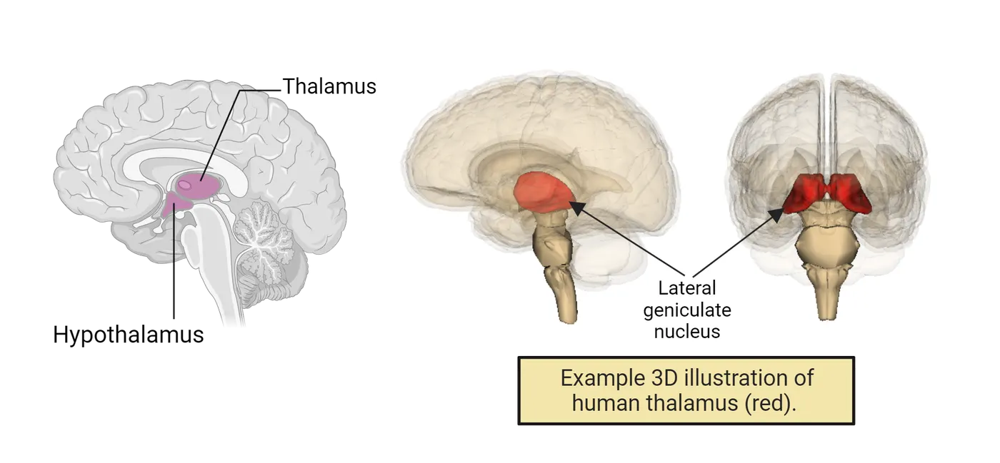
Thalamus
The thalamus is an oval structure, made of two symmetrical parts, one in each hemisphere (Diencephalon). It is the sensory relay station and gateway to and from the cerebral cortex. All sensory information goes through the thalamus with the exception of olfaction (smell). The thalamus is composed of many nuclei that receive sensory information from the body and sorts, processes, and directs the information to the appropriate cortical sensory areas. As an example of one thalamic nucleus, the lateral geniculate nucleus (LGN) receives visual information from the retina via the optic nerve (see cranial nerves) and sends it to the primary visual cortex found in the occipital lobe (see Introduction). The thalamus not only sends information to the cortex but also receives information from the cortex for control and regulation (often associated with motor commands).
Hypothalamus
The hypothalamus is located ventral to the thalamus (Diencephalon). Like the thalamus, it contains several nuclei. It is responsible for regulation of hormones and maintenance of homeostatic mechanisms such as those that keep our bodies at the right temperature and having the right levels of sugar. The hypothalamus regulates the release of hormones from the pituitary gland and thus plays a direct role in connecting the nervous system to the endocrine (hormonal) system of the body. Overall, the hypothalamus is important for many vital functions including: thermoregulation, sex, thirst, hunger, sleep. It is a key regulator of the autonomic nervous system (see The Peripheral Nervous System: PNS below).
Brainstem
The brainstem connects the cerebrum to the spinal cord and also to the cerebellum. It is composed of the midbrain and the hindbrain. The hindbrain is further divided into the pons and medulla oblongata. The fourth ventricle is found at the caudal region of the pons and the dorsal region of the medulla. The brainstem is crucial for vital functions which are discussed below. Stretching from the midbrain to the medulla and into the spinal cord is a network of nuclei and neurons called the reticular formation. These diffusely distributed neurons function in several physiological states such as arousal, consciousness, sleep-wake cycles, heart and respiratory control, and even some pathways involved in pain (Brainstem).
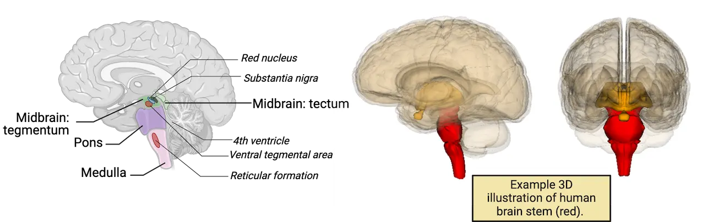
Midbrain
The midbrain has its embryonic origins in the mesencephalon. It is located anterior to and above the pons, and has both sensory and motor components (Brainstem). The midbrain is involved in auditory and visual sensory processing. The top of the midbrain is the tectum (from the Latin word for roof) and the bottom is the tegmentum (from the Latin word for floor) with the cerebral aqueduct passing right through its center. Other regions in the midbrain include the substantia nigra and the ventral tegmental area (VTA). The substantia nigra (one on each side of the brainstem) are considered to be part of the basal ganglia circuitry (The Peripheral Nervous System: PNS) and are named from the Latin words for ‘black substance’ due to the pigment that is found naturally in neurons in this region. The substantia nigra is rich in dopamine neurons and extremely important for motor control. Damage to the substantia nigra (death of dopamine neurons in this region) is associated with Parkinson’s disease, a neurodegenerative movement disorder. Adjacent to the substantia nigra is the red nucleus which also plays a role in motor coordination. The VTA is found adjacent to the substantia nigra and also houses dopamine neurons. This region is part of the reward circuitry in the brain.
Pons
The pons and cerebellum originate from the embryonic metencephalon. The pons is superior to the medulla oblongata (Brainstem). It contains many tracts and nuclei and provides a connection between the cerebellum and the medulla. The word pons is derived from the Latin word for ‘bridge’ and is so named because of the transverse fibers that appeared as a bridge between the cerebellar hemispheres. Due to its many nuclei and tracts, the pons is associated with many different functions. For example, the pons is important for the regulation of sleep and basic bodily functions such as breathing. The pons is associated with 4 of the 12 pairs of cranial nerves and is important for facial expressions, chewing and control of eye movement.
Medulla oblongata
The medulla oblongata derives from the myelencephalon. The medulla is possibly the most important part of our brain as it is essential in the control of vital body functions like breathing, heart rate and blood pressure Brainstem. Additional functions include swallowing, vomiting, and digestion. The medulla contains a number of nuclei in addition to ascending and descending tracts of the spinal cord. Like the pons, it is also associated with cranial nerves (4 of them). These are key for gag reflexes and muscle control that allows for the turning of the head, speaking and swallowing. Of note is the vagus nerve (10th cranial nerve), which is one of the most important nerves in our body. It is a main component of the parasympathetic system and provides sensory and motor circuitry connecting the brain to the neck, lungs, heart and gut. The vagus nerve provides an important back and forth connection between the CNS and the enteric nervous system (the brain-gut axis). It can relay signals from the microbiota (collection of bacteria) in our gut to our brain. Some research suggests that disruption of the microbiota-gut-brain axis may play a role in depression and other psychiatric disorders. Interestingly, the vagus nerve has been studied as a target for treating these types of disorders. Stimulation of the vagus nerve is an approved treatment for hard-to-treat depression.
Cerebellum
The cerebellum (aka little brain) is a structure that originates in the metencephalon and functions in motor coordination and some forms of simple learning. Like the cerebrum, the cerebellum is also divided into two hemispheres Cerebellum. The cerebellum is divided via a midline connector called the vermis (the Latin word for worm). While the cortex gives motor commands, the cerebellum coordinates smooth/timely movement and fine-tunes/adjusts movement based on incoming sensory information such as proprioceptive information. It is necessary for balance and fine motor control, as well as learning and memory of motor tasks, such as learning to ride a skateboard or learning to dance. This motor coordination can be inhibited by alcohol intoxication. Lack of coordination due to intoxication can be assessed by standard tests (finger to nose tests, walking in a straight line, etc.). Alcohol misuse or overuse can cause cerebellar dysfunction and excessive amounts of alcohol consumption actually leads to permanent changes/degeneration in the cerebellum. Furthermore, alcohol exposure during development leads to cerebellar defects such as those observed in children born with FAS (fetal alcohol symptom). The cerebellum has a specific arrangement of three cell layers. While the human brain contains about 86 billion neurons, roughly 80% of these are found in the cerebellum. Note that the cerebellum only makes up 10% of brain volume. Interestingly, case studies of individuals lacking a cerebellum indicate that for the most part, these individuals function relatively well, often not even discovering their lack of a cerebellum until adulthood. (Cerebellum)
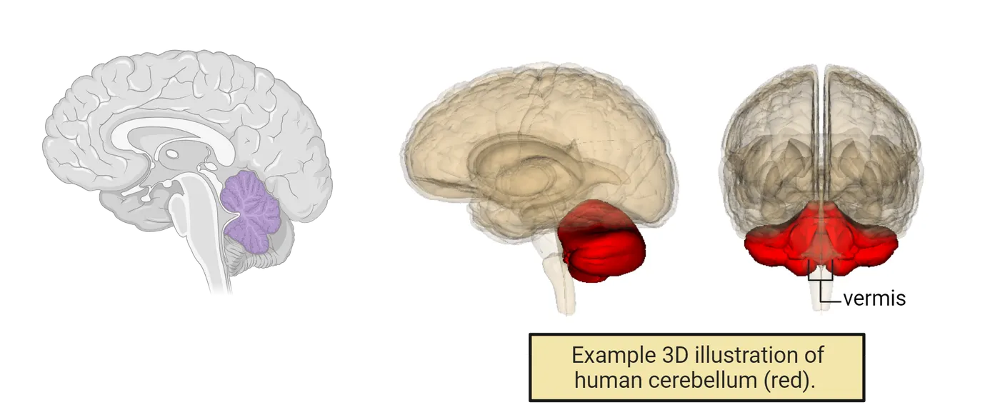
Brain lateralization
Hemispheric lateralization refers to different brain functions and/or behaviors being controlled by one hemisphere rather than the other. Most of the evidence for this type of specialization is related to language control. For example, there are two left hemisphere specific regions that are important for language: a region called Broca’s area associated with speech production and speech articulation and Wernicke’s area associated with language comprehension. Other examples of lateralization include handedness, the preference of the right or left hand for different tasks. Beyond that, the differences that have been found in associating different behaviors to one or the other hemispheres are generally small.
Visualizing the human brain
A number of imaging techniques have been developed to aid neuroscientists and medical professionals to visualize the human brain at the level of structure and function. Structural techniques such as PET, CT and MRI scans result in images of anatomical features of the brain while functional techniques such as functional MRI (fMRI) produce images that represent neural activity (see Methods: fMRI). Functional imaging techniques can be used in experiments where a subject performs a specific behavior or cognitive task, allowing scientists to correlate brain anatomy with function. Brain imaging techniques are important experimental tools, allowing us to delve deeper into the inner workings of the brain. Imaging can also be used for diagnosing and studying brain disorders. However, it is important to remember that the brain is exceptionally complicated and that these techniques are not perfect in measurement or definitive in conclusion. Each has its own advantages and limitations. For example, PET and CT scans are sensitive and prone to motion artifacts and fMRI measurements are an indirect measurement of brain activity (increased blood flow and oxygenation) (Imaging the live human nervous system).
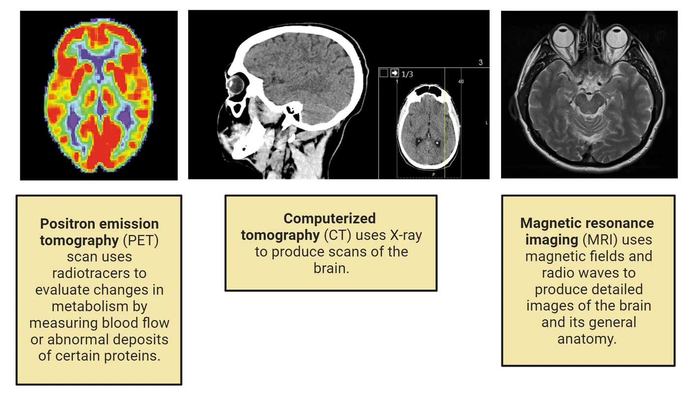
Summary
The human brain is derived from 3 major embryonic divisions (the forebrain, midbrain and hindbrain), which is further subdivided into 5 regions during development. The adult brain derivatives can be organized according to these 5 regions. While we can assign some general functions to major brain regions, we should view the brain as having built in ‘degeneracy’—a behavior or brain function can be supported by multiple regions of the brain rather than a stringent one-to-one function to region ratio.
Key terms
cerebral hemispheres, cerebral cortex, corpus callosum, cerebral nuclei, gyri, fissures, sulci, longitudinal fissure, frontal, temporal, parietal, occipital lobes, motor cortex, brain stem, prefrontal cortex, central sulcus, proprioception, Sylvian fissure, cerebral commissures, basal ganglia, limbic system, hippocampus, amygdala, cingulate gyrus, fornix, septum, olfactory bulb, caudate nucleus, putamen, globus pallidus, subthalamic nucleus, thalamus, hypothalamus, lateral geniculate nucleus (LGN), brainstem, reticular formation, midbrain, tectum, tegmentum, substantia nigra, red nucleus, ventral tegmental area (VTA), pons, medulla, vagus nerve, cerebellum, vermis, Broca's area, Wernicke's area, forebrain vocal nuclei, PET, CT, MRI, fMRIReferences
Breit, S., Kupferberg, A., Rogler, G., & Hasler, G. (2018). Vagus nerve as modulator of the brain–gut axis in psychiatric and inflammatory disorders. Frontiers in Psychiatry, 9. https://doi.org/10.3389/fpsyt.2018.00044
Eliot, L.S. (2021, April 23). You don’t have a male or female brain – the more brains scientists study, the weaker the evidence for sex differences. Philly Voice. https://www.phillyvoice.com/human-brain-sex-differences-male-female-size/.
Eliot, L., Ahmed, A., Khan, H., & Patel, J. (2021). Dump the “dimorphism”: Comprehensive synthesis of human brain studies reveals few male-female differences beyond size. Neuroscience and Biobehavioral Reviews, 125, 667–697. https://doi.org/10.1016/j.neubiorev.2021.02.026
Fischl, B., & Dale, A.M. (2000). Measuring the thickness of the human cerebral cortex from magnetic resonance images. Proceedings of the National Academy of Sciences, 97(20), 11050–11055. https://doi.org/10.1073/pnas.200033797
Herculano-Houzel, S. (2012). The remarkable, yet not extraordinary, human brain as a scaled-up primate brain and its associated cost. , 109(Supplement 1), 10661–10668. https://doi.org/10.1073/pnas.1201895109
Herculano-Houzel, S., Catania, K., Manger, P.R., & Kaas, J.H. (2015). Mammalian brains are made of these: A dataset of the numbers and densities of neuronal and nonneuronal cells in the brain of glires, primates, scandentia, eulipotyphlans,afrotherians and artiodactyls, and their relationship with body mass. Brain, Behavior and Evolution, 86(3-4), 145–163. https://doi.org/10.1159/000437413
Mangold, S.A., & Das, J.M. (2021). Neuroanatomy, reticular formation. In StatPearls. StatPearls Publishing. https://www.ncbi.nlm.nih.gov/books/NBK556102/.
Nottebohm, F., & Arnold, A.P. (1976). Sexual dimorphism in vocal control areas of the songbird brain. Science, 194(4261), 211–213. https://doi.org/10.1126/science.959852
Tan, C., Yan, Q., Ma, Y., Fang, J., & Yang, Y. (2022). Recognizing the role of the vagus nerve in depression from microbiota-gut brain axis. Frontiers in Neurology, 13, 1015175. https://doi.org/10.3389/fneur.2022.1015175
Practice The multiple-choice and fill-in-the-blank questions for this section are interactive and live on OpenStax, so they are not carried here: open the book on openstax.org.
1.5The Peripheral Nervous System: PNS
By the end of this section, you should be able to
- Demonstrate an understanding of the overall structure and function of the peripheral nervous system (PNS).
- Explain the difference between the somatic and autonomic divisions of the peripheral nervous system (PNS).
- Describe the difference between the sympathetic and parasympathetic divisions of the autonomic nervous system.
When you enter a dimly lit room, your pupils enlarge. When you are nervous before an exam, your heart might start racing and your palms get sweaty. These are just two examples of your peripheral nervous system in action. The PNS contains all the neural tissue outside of the brain and spinal cord. It is an extensive network of nerves that contacts almost every nook and cranny of our bodies. The PNS contains sensory and motor neurons not only linking the CNS to the external world but also to our internal visceral tissues (such as the heart, lungs, stomach). The PNS and CNS are in constant back and forth communication. This relationship is vital for the proper function of an organism.
Afferent and efferent divisions
The PNS is made up of afferent (sensory) and efferent (motor) components. The afferent division brings information from the periphery (receptors found within skin, joints, muscle, visceral organs) to the spinal cord and brain via sensory nerves. The information brought in by afferent neurons is decoded and processed by the CNS. The efferent component, on the other hand, utilizes motor neurons that transmit information from the CNS to the periphery. This includes our muscle tissue (effectors) causing muscle contraction and thus voluntary body movements. In addition, the efferent division also controls smooth muscle in visceral organs, cardiac muscle and glands. It can function with or without consciousness (voluntary or involuntary).
Cranial and spinal nerves
A substantial portion of the PNS is made up by cranial and spinal nerves that transmit efferent and afferent information. There are 12 pairs of cranial nerves that emerge from the back of the brain, and 31 pairs of spinal nerves that emerge from the spinal cord (Spinal and cranial nerves).
![Diagram of the central nervous system of a human, showing a brain with spinal cord descending from the back of the brain and spinal nerves exiting at each vertebrae. The fan of nerves of the caudal equina are also shown in the caudal end of the spinal cord. Also shown is a diagram of the ventral surface of the human brain with the 12 cranial nerves exiting bilaterally. They are: the olfactory nerve (I), the optic nerve (II), oculomotor nerve (III), trochlear nerve (IV), trigeminal nerve (V), abducens nerve (VI), facial nerve (VII), vestibulocochlear nerve (VIII), glossopharyngeal nerve (IX), vagus nerve (X), accessory nerve (XI), and the hypoglossal nerve (XII)](../assets/textbook/img/Image-1.55_Spinal-and-cranial-nerves.webp)
The cranial nerves pass through the cranium (skull) via holes called foramina and canals. Most of the cranial nerves control the head and neck including the jaw, throat, tongue, neck and face. They also carry visual (optic), smell (olfactory) and taste (gustatory) information, and participate in hearing and balance (vestibulocochlear). Of the 12 cranial nerves, 3 are exclusively sensory (afferent), 5 are exclusively motor (efferent) and the remaining 4 cranial nerves are both motor and sensory. Nerve number X (10) is called the vagus nerve (named for the word ‘wandering’). It wanders/extends very far and innervates the heart and intestines, receiving and sending information regarding internal organs. The vagus nerve has been actively researched and doctors can stimulate it with electricity to treat a number of disorders including difficult to treat cases of epilepsy and depression.
The spinal nerves arise from the spinal cord as nerve roots (ventral and dorsal). They jet out through the openings of the vertebral column thus serving both sides of the body. Like the cranial nerves, the spinal nerves carry both sensory information and motor information to and from the spinal cord. The spinal nerves are named based on the spinal column region from which they exit. There are 8 neck (cervical), 12 trunk (thoracic), 5 lower back (lumbar), 5 pelvic (sacral) and 1 bottom (coccyx) spinal nerve (Spinal nerve organization).
Ganglia
The nerve cell bodies that are found in the PNS are organized into structures called ganglia which can be seen as enlargements along the peripheral nerves. The word ganglia originates from the Latin word for ‘swelling’. Functionally, PNS ganglia serve as relay points for information being received and transmitted. They fall into two major categories: sensory ganglia and autonomic ganglia. The sensory ganglia (of spinal nerves and some cranial nerves) contain thousands of cell bodies of neurons that extend their processes to the periphery. These are generally unipolar neurons (see Building a Nervous System above) that receive input from the periphery and send that information via axons to the spinal cord and the brain. The other category of PNS ganglia are the autonomic ganglia, which contain the cell bodies of autonomic nervous system neurons (ANS) and can be found in both the sympathetic and parasympathetic divisions of the ANS (Nervous system divisions).
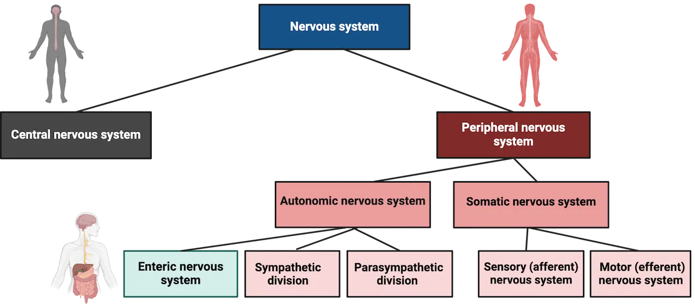
The somatic and autonomic divisions of the PNS
The PNS can be divided into the somatic nervous system (SNS) and the autonomic nervous system (ANS). Both systems have motor and sensory components and both systems utilize the neurotransmitter acetylcholine. The ANS also uses norepinephrine. The main function of the SNS is the control of voluntary muscles and thus conscious actions such as walking. It consists of sensory and motor nerves. It receives somatosensory information from our skin, muscles, bones and joints, and targets skeletal muscles via motor innervation (Somatic vs autonomic nervous system). The cell bodies of these motor neurons are found in the gray matter of the spinal cord.
![Top diagram shows basics of the somatic nervous system. A section of spinal cord is shown with input coming from sensory neurons and going up the spinal cord and output going to skeletal muscle. Major components are described in main text. Bottom diagram shows basics of autonomic nervous system. A section of spinal cord is shown with input coming from smooth muscle and going up the spinal cord and output going to autonomic ganglia which then send output via ganglionic autonomic neurons to smooth muscle. Major components are described in main text.](../assets/textbook/img/Image-1.34_Somatic-vs-autonomic-nervous-system.webp)
The ANS controls generally involuntary (autonomic, meaning self-governing) processes such as our breathing and heartbeat. It primarily controls the internal organs of the body, cardiac and smooth muscles, and glands (Sympathetic and Parasympathetic systems). We often hear the ANS referred to as a visceral system. The reason for this is because it communicates with visceral organs. These are organs in the chest, abdomen, and pelvis. Visceral sensory neurons monitor changes in temperature and stretch of visceral organs allowing the CNS to control and regulate their action via visceral motor outputs. We can further divide the ANS into three distinct parts: sympathetic, parasympathetic, and enteric systems. The sympathetic and parasympathetic systems have generally antagonistic or opposite functions in regulating organ functions. The same organs are innervated by both the parasympathetic and sympathetic systems causing opposite effects. These two systems differ in function, anatomical organization, and types of neurotransmitters that they use. We will briefly discuss each of these systems below (Sympathetic and Parasympathetic systems).
![Diagrams of sympathetic and parasympathetic systems, showing nerve paths from spinal cord (sympathetic) or vagus nerve (parasympathetic) to visceral organs that they innervate. Parasympathetic functions: constricts pupils and stimulates tear production and salivation, constricts airways, slows heartrate, stimulates digestion, stimulates voiding of bladder, stimulates erection of genitals. Sympathetic functions: dilates pupils and inhibits salivation, relaxes airways, increases heartrate, stimulates glucose production and release, stimulates the release of adrenaline, inhibits digestion, inhibits voiding of bladder, stimulates orgasm.](../assets/textbook/img/Image-1.15_Autonomic-nervous-system.webp)
Sympathetic nervous system
The sympathetic system underlies the fight or flight response. This is a threat/emergency response mechanism which is not unique to only humans. The sympathetic nervous system is responsible for a lot of body functions related to hyperarousal such as increases in heart rate and blood pressure, inhibition of salivation/digestion and pupil dilation (Sympathetic and Parasympathetic systems). At the same time, non-necessary functions like digestion are put on hold while the body gets more blood flow to muscles. The sympathetic nervous system neurons arise from the thoracic and lumbar regions of the spinal cord. Fibers extend from the spinal region to its target organ such as the heart, liver, intestines, stomach, bladder, glands, etc.
Parasympathetic nervous system
The parasympathetic system acts in exact opposition to the sympathetic system and helps the body relax and digest. The parasympathetic system is responsible for slowing the heartbeat, stimulating salivation, digestion, urination, etc. (Sympathetic and Parasympathetic systems). Like the sympathetic nervous system, it also targets organs like the heart, intestines, bladder, etc. but causes opposite effects. The neurons of the parasympathetic nervous system arise from the brain (cranial nerves) and the sacral spinal cord region.
The enteric nervous system
The enteric nervous system is a net-like system of neurons that orchestrates gastrointestinal function via innervation of the digestive tract. It has more neurons than the spinal cord and is exceptionally complex. For example, it uses 30 different neurotransmitters. It is not entirely controlled by the CNS but is connected to the CNS via a communication network called the brain-gut axis. The enteric nervous system has both sensory and motor properties and controls the digestive system, smooth muscle, and glands (Enteric nervous system).
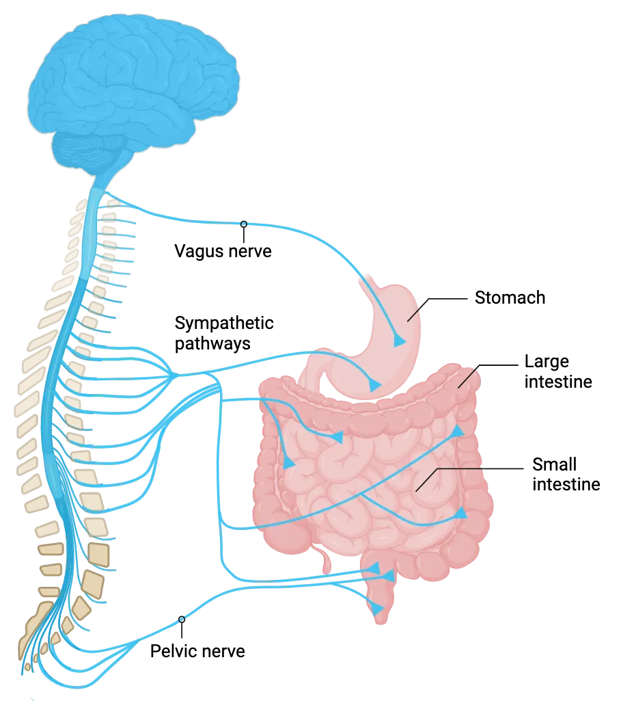
Summary
The peripheral nervous system is composed of the somatic and autonomic divisions and includes all the nerves and ganglia outside of the brain and spinal cord. The somatic division is under voluntary control and sends commands from the central nervous system to muscles, for example. The autonomic division is generally involuntary and controls functions such as heart rate and digestion. The autonomic system can be further divided into the sympathetic, parasympathetic and enteric nervous systems.
Key terms
sensory ganglia, autonomic ganglia, somatic nervous system, autonomic nervous system, sympathetic nervous system, parasympathetic nervous system, enteric nervous systemReferences
Akinrodoye, M.A., & Lui, F. (2022). Neuroanatomy, somatic nervous system. In StatPearls. StatPearls Publishing. https://www.ncbi.nlm.nih.gov/books/NBK556027/
Breit, S., Kupferberg, A., Rogler, G., & Hasler, G. (2018). Vagus nerve as modulator of the brain–gut axis in psychiatric and inflammatory disorders. Frontiers in Psychiatry, 9. https://doi.org/10.3389/fpsyt.2018.00044
Adapted from Introduction to Behavioral Neuroscience by OpenStax, licensed under CC BY-NC-SA 4.0. Access for free at openstax.org. Changes: set in this site’s own pages and type, the images recompressed, the interactive exercises and videos linked rather than carried. This adaptation is offered under the same licence.